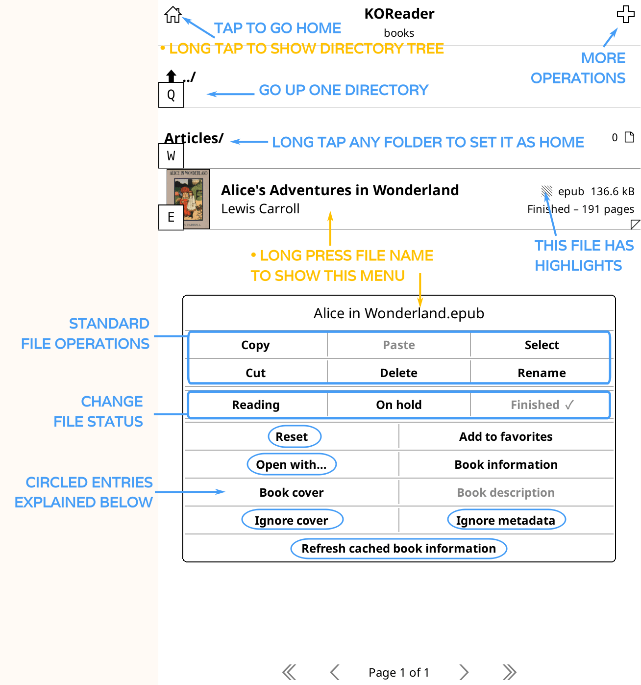
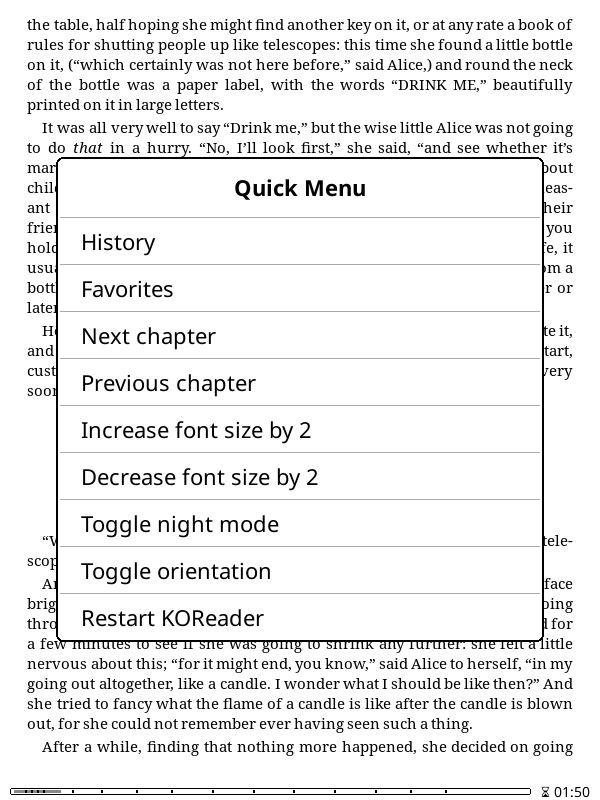

Je leest momenteel de Nederlandse (vertaalde) versie van de KOReader Gebruikershandleiding. Vrijwilligers zijn deze handleiding ook aan het vertalen naar andere talen. We hebben veel vertalingen in uitvoering, zoals je kunt zien in de algemene vertaalstatus hieronder. Maar we linken enkel naar talen die voor meer dan 50% vertaald zijn.
Voor meer dan 80% vertaald
Om alle talen te zien die momenteel worden vertaald en om bij te dragen aan de vertaling van de gebruikershandleiding, ga naar de Weblate-vertaalpagina van ons project.
Algemene vertaalstatus van de gebruikershandleiding

Deze handleiding is voornamelijk ontworpen voor kleurenschermen. Als je deze voor het eerst gebruikt, raden we sterk aan deze te lezen op een computer, tablet of mobiele telefoon. Het zien van gebruikersinterface-elementen gemarkeerd in kleur maakt het leven gemakkelijker bij het leren van KOReader. Natuurlijk kun je dit ook lezen op je e-ink apparaat, maar de ervaring zal niet optimaal zijn.
Je kunt de zoekfunctie van je browser gebruiken om een specifiek onderwerp te vinden (gewoonlijk Ctrl + F). Als je een suggestie of vraag hebt met betrekking tot deze gebruikershandleiding, kun je schrijven naar deze GitHub-discussie.
Delen van de tekst in deze handleiding zijn kleurgecodeerd op basis van hun categorieën:
ONDERDELEN VAN KOREADER (BLAUW) |
Statusbalk, Boekkaart… |
MENUPADEN (GROEN) |
BOVENMENU /  / Markeerstijl / Markeerstijl |
EXTERNE APPS (PAARS) |
Calibre, Readwise, KoHighlights… |
We hebben ook verschillende vakken door de handleiding heen om je te informeren of te waarschuwen:
KOReader wordt ontwikkeld en ondersteund door vrijwilligers van over de hele wereld. Je kunt ook deel uitmaken van dit project door:
- Bugs op te lossen en nieuwe functies te implementeren
- Het programma te vertalen naar je taal of een bestaande vertaling verbeteren
- Anderen helpen met je kennis in de forums of bij GitHub issues en discussies
Bekijk de Contact-sectie voor de links.
Handleiding laatst bijgewerkt: 2025-03-25
- WAT KUN JE MET KOREADER DOEN?
- BASISGEBRUIKSINFORMATIE
- DE GEBRUIKERSINTERFACE LEREN KENNEN
- DOOR JE BOEK NAVIGEREN
- TEKSTWEERGAVE AANPASSEN
Ondanks zijn minimalistische uiterlijk is KOReader een zeer krachtige en aanpasbare applicatie. Deze sectie is als een inhoudsopgave die gericht is op instructies. Dus als je een nieuwe gebruiker bent, is dit de beste plek om te beginnen. Hier kun je lezen wat KOReader kan doen en leren hoe je het doet door deze  links te volgen naar de genoemde secties.
- USB-massageheugen modus voor ondersteunde apparaten 
- Cloudopslag (Dropbox/FTP/Webdav) met geschikte accounts 
- KOReader kan fungeren als een SSH-server, zodat je een SFTP-applicatie of je bestandsbeheerder kunt gebruiken om bestanden direct over te brengen 
- Met de Calibre plugin kun je boeken rechtstreeks vanuit je Calibre-bibliotheek naar je KOReader-apparaten verzenden via wifi 
- Met de Nieuwsdownloader plugin kun je RSS- en Atom-nieuwsberichten naar je apparaat downloaden als HTML-bestanden 
- Met de Wallabag plugin kun je artikelen ophalen uit je Wallabag account (een server-gebaseerde 'lees-het-later' service zoals Pocket) 
- Wijzig lettertypes (inclusief je eigen), lettergrootte, contrast, vetheid, spatiëring tussen letters, woordafstand, woorduitbreiding, tekstuitlijning, regelafstand, kolomindeling, marges… 
- Gebruik de krachtige stijlaanpassingen of schrijf je eigen aanpassingen om precies te bepalen hoe je boeken worden weergegeven 
- Keer schermkleuren om voor nachtmodus, handmatig of automatisch 
- Pas de warmte van de verlichting automatisch aan 
- Markeer tekst met verschillende stijlen en kleuren, plaats bladwijzers 
- Twee-tik modus voor academische/langere markeringen 
- Notities toevoegen met een aanpasbaar toetsenbord inclusief diakritische tekens 
- Screenshots maken 
- Volg je leesstatistieken inclusief leesvoortgang, tijdsbereik en kalenderweergaves
- Exporteer je notities en markeringen naar je apparaat als tekst, markdown, HTML, JSON of Kindle-knipsel formaat 
- Synchroniseer met online services zoals Joplin, Readwise, Memos, Flomo en XMNote 
- Krachtige Bestandsverkenner waar je bestanden en mappen kunt kopiëren, verplaatsen, hernoemen, aanmaken, verwijderen en bulkoperaties uitvoeren 
- Bekijk je bibliotheek zoals je wilt met vele gedetailleerde en mozaïek weergaves 
- Voeg je boeken toe aan je Favorieten voor snelle toegang of maak je eigen Collecties met sorteren en filteren 
- Doorbladerwidget om snel tussen pagina's, hoofdstukken en bladwijzers te springen 
- Unieke Boekkaart om een vogelvluchtkaart van het boek te zien, inclusief alle notities en markeringen 
- Paginaverkenner om door pagina's te bewegen als door een filmrol 
- Bladwijzerbrowser om eenvoudig door je markeringen en notities te bladeren 
- Maak een alternatieve inhoudsopgave automatisch of handmatig als degene die bij boek hoort niet bevalt 
- Verberg en sluit bepaalde delen van het boek uit, zoals Bijlage, Index, Referenties enz. voor nauwkeurigere paginatellingen 
- Krachtig gebarensysteem met 200+ acties laat je elk aspect van KOReader bedienen met een tik of veeg 
- Als je een toetsenbord hebt (intern, bekabeld of bluetooth) kun je ook sneltoetsen aan deze acties toewijzen 
- Of maak je eigen menu's met je favoriete acties met het Snelmenu en open ze met een tik of veeg 
- Maak Profielen om elk aspect van KOReader te sturen en acties te automatiseren 
- Zoek in het document door tekst te selecteren of in te voeren (inclusief reguliere expressies)
- Zoek in je bladwijzers, markeringen en notities
- Zoek tekst op in Wikipedia of in geïnstalleerde woordenboeken en vertaal het met een lange tik
- Vertaal hele pagina's tegelijk tussen meer dan 130 talen
- Met ons krachtige plugin-systeem kun je zelfs de tekst bespreken met ChatGPT (na installatie van de plugin) 
- KOReader kan zichzelf updaten 
- Dim of zet je schermverlichting uit na een ingesteld interval
- Stel je paginaverversingsintervallen in voor verschillende leesomstandigheden 
- Stel je eigen schermbeveiliging in uit veel opties zoals willekeurige afbeeldingen, boekomslag, lezen, voortgang, enz.
- Stel batterij laadlimiet alarmen in om diepe ontlading/overlading te voorkomen 
- Stel een geheugengebruikwaarschuwing in (nuttig voor apparaten met minder geheugen) en herstart optioneel KOReader bij het bereiken van deze limiet 
- Snijd marges automatisch of handmatig bij
- Herschikking van documenten om tekst te extraheren en gemakkelijker te lezen op een klein scherm
- Pas OCR toe op documenten zonder tekstlagen, zoals gescande oude boeken 
- Verschillende zoomtypes en paginastroom-richtingen om meerkolommige documenten zoals wetenschappelijke artikelen gemakkelijk te lezen 
- Recht automatisch scheef gescande documenten, zoals gescande oude boeken 
- Sla je markeringen direct op in PDF's zodat je ze kunt zien zonder KOReader 
- Speciale Paneelzoom functie voor het lezen van manga's 
- Instelbare schermverversings instellingen voor perfect balanceren tussen ghosting en snelheid 
- Voeg je eigen CSS-stijlaanpassingen toe voor boeken 
- Gebruikerspatches systeem waarmee je het kerngedrag van KOReader kunt wijzigen 
- Maak een QR-code van je klembord om tekst en links te delen naar andere apparaten
- Bekijk HTML-broncode van een EPUB-document
- Maak en bewerk tekstbestanden op je apparaat
- Open een terminalemulator en voer commando's uit op je apparaat
- Bekijk je CPU-, geheugen- en batterijgebruikstatistieken
KOReader ondersteunt PDF, EPUB, DJVU, MOBI, CBZ, CBT, DOCX, RTF, HTML, TXT, XPS, FB2, PDB, CHM en MD bestanden. Het kan ook ZIP archieven openen en afbeeldingsbestanden tonen.
Er zijn veel manieren om je documenten naar je apparaat over te zetten. Let op dat je mogelijk KOReader moet herstarten om de overgedragen documenten te indexeren (of directory verversen als je Pocketbook/Android hebt).
Naast het overzetten van bestanden op dezelfde manier als je zou doen met de ingebouwde lezer-applicatie, zijn er andere opties beschikbaar afhankelijk van je apparaat:
- USB-massaopslagmodus binnen KOReader: Deze modus is beschikbaar voor KOBO en sommige CERVANTES apparaten.
- Cloudopslag (Dropbox/FTP/Webdav): Om deze functie te gebruiken moeten accounts worden toegevoegd voor een cloudopslagserver via het menu wat hieronder wordt getoond. Het proces wordt uitgelegd via info knoppen in het menu bij het toevoegen van accounts:
BOVENMENU (in Bestandsverkenner) /
 / Cloudopslag
/ Cloudopslag - SSH/SFTP-toegang: KOReader kan fungeren als een SSH-server waartoe je vanaf een computer toegang hebt om bestanden over te zetten (beschikbaar op Kobo, Kindle, Cervantes). Je kunt een SFTP-applicatie gebruiken (zoals Filezilla) of via je bestandsbeheerder openen als je besturingssysteem dat ondersteunt. Zie onze wiki voor instructies en bekijk ook het waarschuwingsvak hieronder.
- Calibre overdracht: Met de Calibre plugin kun je documenten rechtstreeks vanuit je Calibre bibliotheek naar je KOReader apparaten sturen via een wifi verbinding. Bekijk onze wiki voor instructies.
- Nieuwsdownloader: met deze plugin kun je RSS en Atom nieuwsberichten downloaden als HTML bestanden. Bekijk de wiki voor instructies.
- Wallabag: met deze plugin kun je artikelen ophalen uit Wallabag, een server-gebaseerde lees-het-later dienst zoals Pocket. Zie de wiki-pagina voor meer info.
WAARSCHUWING Wees voorzichtig als je besluit de SSH-functie zonder wachtwoord te gebruiken, omdat dit open toegang tot je apparaat toestaat. Maar als je een lokale wifi gebruikt en je apparaat wifi voor een korte tijd aanzet, is dit risico verwaarloosbaar.
De volgende methodes zijn beschikbaar voor toegang tot je boeken:
- Bestandsverkenner - Toegewijde sectie is hier: Bestandsverkenner gebruik
- Favorieten - Een lijst waaraan je je boeken kunt toevoegen door lang op ze te drukken in de Bestandsverkenner
- Geschiedenis - Lijst van boeken die je geopend hebt
- Collecties - Gepersonaliseerde boekenlijsten die je gemaakt hebt. Toegewijde sectie is hier: Collecties
Je kunt wijzigen hoe deze schermen eruit zien via:
 / Weergavemodus
/ WeergavemodusAls je wilt wijzigen hoeveel items zichtbaar zijn op deze schermen, kijk hier:
/ Instellingen / Mozaïek- en gedetailleerde lijstinstellingenJe kunt gebaren toewijzen voor elk van deze dialogen. Bijvoorbeeld tijdens het lezen van een boek kun je Geschiedenis of Favorieten benaderen met een gebaar en een ander boek openen zonder door de Bestandsverkenner te gaan.
Je kunt een boek zoeken in het Geschiedenis scherm op bestandsnaam of boekmetadata via de hamburger menu knop linksboven.
Je kunt KOReader ook instellen om te starten met het Favorieten of Geschiedenis scherm in plaats van de Bestandsverkenner via:
/ Start met
In de afbeelding hierboven zie je de posities van de standaard tikzones van KOReader. Om het bovenste menu of ondermenu weer te geven, kun je op de aangegeven zones tikken. Je kunt ook naar beneden vegen in de bovenste zone om het hoofdmenu te tonen. Op niet-touch apparaten zoals Kindle 4 kun je het ondermenu openen door de knop in te drukken die overeenkomt met de ENTER/OK actie.
Als je beide menu's tegelijk wilt openen kun je de bovenmenu-zone instellen om zowel het bovenmenu als het ondermenu tegelijk te openen via dit menu:
 / Tikken en gebaren / Menu activeren
/ Tikken en gebaren / Menu activeren
Hoek-tikzones kunnen gebruikt worden voor veel verschillende soorten gebaren, waaronder TIK, DUBBELTIK, TWEEVINGERTIK en TIK en INGEDRUKT HOUDEN.
VORIGE PAGINA en VOLGENDE PAGINA zones kunnen ook tegelijk gebruikt worden voor DUBBELTIK gebaren.
Op de Statusbalk zone kan getikt worden om tussen de statusbalk items te wisselen als slechts één item zichtbaar is. Als alle items zichtbaar zijn, zal tikken de statusbalk tonen en verbergen.
- Lettertype wijzigen*:BOVENMENU / / Lettertype
- Maak het lettertype groterONDERMENU /

- Maak het lettertype vetterONDERMENU /

- Keer de kleuren op het scherm om (wit op zwart)BOVENMENU / / Nachtmodus
Je kunt ook andere opmaakopties wijzigen via het ONDERMENU om de weergave van je tekst fijn af te stellen. Dit zijn alleen snelle tips om je op weg te helpen. Er is een volledige sectie gewijd aan TEKSTWEERGAVE AANPASSEN
Je kunt de schermverlichting bedienen via dit menu. Als je warme verlichting hebt (normale witte leds + oranje) kun je die afzonderlijk regelen vanuit deze dialoog. Je kunt ook een gebaar aan deze dialoog toewijzen:
/ VerlichtingJe kunt via dit menu een boekomslag of een eigen afbeelding als schermbeveiliging kiezen:
/ Scherm / SchermbeveiligingJe kunt JPG/PNG-bestanden als schermbeveiliging gebruiken (goed geditherde grijswaardenafbeeldingen zien er het beste uit). Kopieer de bestanden vanaf je computer naar een willekeurige map op je apparaat en kies die map als schermbeveiligingsmap via dit menu:
/ Scherm / Schermbeveiliging / InstellingenZie dit Mobileread forumbericht voor geavanceerde informatie over het voorbereiden van schermbeveiligingsafbeeldingen.
Als je informatie zoekt over sneltoetsen, klik dan hier om naar die sectie te gaan. Deze paragraaf legt alleen het toetsenbordgebruik uit.
- Tik buiten het invoerveld om het toetsenbord te sluiten; tik op het invoerveld om het weer te tonen
- Veeg omhoog over toetsen om de hoofdletter van die letter in te voeren (of kleine letter als je al in shift-modus zit)
- Je kunt het uiterlijk van het toetsenbord wijzigen:
BOVENMENU / / Apparaat / Toetsenbord / Toetsenbordinstellingen
- Je kunt meer dan één indeling selecteren:
BOVENMENU / / Apparaat / Toetsenbord / Toetsenbordindeling
- Je kunt wisselen tussen je geselecteerde indelingen door op het
 pictogram op het toetsenbord te tikken
pictogram op het toetsenbord te tikken
Het KOReader-toetsenbord laat je extra tekens invoeren door een toets ingedrukt te houden. De meest gebruikte extra tekens staan hieronder. Houd de toets in het grijze vak ingedrukt om de omliggende tekens te krijgen:

Naast het lang-ingedrukt-popup venster kun je deze extra tekens ook invoeren door over een toets te vegen. In het voorbeeld hieronder kun je omhoog vegen op de a-toets voor een hoofdletter A of in andere richtingen voor de getoonde tekens. Het voorbeeld toont de volledige popup ter demonstratie; je hoeft die niet te openen en kunt direct vegen. Als je de posities gewend bent gaat dit veel sneller.

Als deze functie je in de weg zit kun je haar uitschakelen door het volgende uit te vinken:
/ Apparaat / Toetsenbord / Vegen om extra tekens in te voerenDaarnaast zijn er enkele sneltoetsen om tekst makkelijker te bewerken. Je kunt deze toetsen ingedrukt houden voor extra acties:
- Pijl links - Verplaatst de cursor naar het begin van de regel
- Pijl rechts - Verplaatst de cursor naar het einde van de regel
Ook de backspace-toets gedraagt zich anders wanneer je er veeggebaren op maakt:
- Tik: verwijdert één teken
- Lang ingedrukt: verwijdert de hele regel
- Veeg naar links: verwijdert een deel van het woord links van de cursor
- Veeg omhoog: verwijdert het hele woord
Voor meer informatie zie de bijbehorende wikipagina.
KOReader bevat ook het Chinese lijnentoetsenbord voor het invoeren van vereenvoudigde en traditionele Chinese tekens. Meer info vind je in onze wiki.
Deze plugin laat je de warmte van de schermverlichting op apparaten met natuurlijk (geel/oranje) licht aanpassen en nachtmodus (omgekeerde schermkleuren – witte tekst op zwarte achtergrond) automatisch volgens een schema instellen. Hij kan beide sturen of je kiest alleen warmte of alleen nachtmodus zodat je de andere handmatig regelt.
Deze plugin staat standaard aan wanneer je KOReader installeert. Staat hij om wat voor reden dan ook niet in het menu, dan kun je hem hier inschakelen:
/ Meer hulpmiddelen / Automatische warmte en nachtmodusJe kunt de warmte van de schermverlichting automatisch aanpassen op twee manieren:
Vast schema: in deze modus verandert de warmte volgens het dagelijkse schema dat je hebt ingevoerd. Deze modus is statisch en houdt geen rekening met de lengte van de dag. Het schema blijft het hele jaar gelijk.
Zonpositie: deze optie berekent de positie van de zon op jouw locatie aan de hand van ingevoerde coördinaten en hoogte. De warmte wordt geleidelijk aangepast volgens deze berekende gegevens. Deze modus is dynamisch. Als de daglengte verandert past de plugin het schema daarop aan.
Kijk eerst naar deze afbeelding om vertrouwd te raken met de in de plugin gebruikte termen:

- Ga naar het pluginmenu: BOVENMENU / / Scherm / Automatische warmte en nachtmodus
- Tik op Activeren en vervolgens op Volgens het vaste schema
- Ga terug en tik op Instellingen vast schema
- Stel hier het overgangsschema voor de warmte in door tijden voor de verschillende elementen op te geven. Zie de afbeelding hierboven voor uitleg.
- Ga naar het pluginmenu:
BOVENMENU / / Scherm / Automatische warmte en nachtmodus
- Tik op Activeren en vervolgens op Volgens de zonpositie
- Ga terug en tik op Locatie-instellingen. Vul je coördinaten (verplicht) en hoogte (optioneel) correct in en geef de locatie een naam.
- Ga terug en tik op Instellingen warmte en nachtmodus
- Stel hier het overgangsschema voor de warmte in door tijden voor de verschillende elementen op te geven. Zie de afbeelding hierboven voor uitleg.
Je huidige schema is te raadplegen via de optie Huidig actieve parameters.

Tijdens het instellen van de percentages voor verschillende intervallen kun je een interval ook op Nachtmodus zetten, wat de schermkleuren omkeert wanneer het interval start. Als je minimale verlichting nog te fel is of je een donkere achtergrond wilt, activeer dit dan. Vink in de dialoog hieronder Nachtmodus aan en tik op Stel in.
Als je dit doet verschijnt een maantje in het menu naast het interval. Uitschakelen doe je door het vinkje Nachtmodus in dat interval te verwijderen.

Deze functie schakelt je schermverlichting in bij zonsondergang en uit bij zonsopkomst volgens de Huidig actieve parameters. Je kunt dit overschrijven door de verlichting handmatig aan/uit te zetten. Bij de volgende zonsopkomst/-ondergang zal AutoWarmth het opnieuw aanpassen indien nodig. Activeer via de optie Verlichting uit overdag.
Als je wilt dat de warmte snel verandert in plaats van geleidelijk:
- Stel de modus in op Vast schema volgens bovenstaande instructies
- En pas de instellingen aan zoals op de afbeelding hieronder:

Zoals je ziet is er slechts één minuut verschil tussen dag-nacht overgang. De schermwarmte gaat dus van 0 naar 100 (of omgekeerd) in één minuut. Vergroot deze tijd om de overgang langer te laten duren.
KOReader heeft een eenvoudige, voornamelijk zwart-witte interface omdat kleurverlopen en verschillende grijstinten flikkeren en ghosting kunnen veroorzaken op e-ink schermen, wat de leeservaring verslechtert.
KOReader heeft 2 hoofdinterfaces: het leesscherm en de bestandsverkenner. Hier leggen we het leesscherm uit. De bestandsverkenner wordt uitgelegd in deze sectie van de handleiding.
Het LEESSCHERM heeft twee menu's:
- Het BOVENMENU bevat items voor algemeen gebruik van KOReader. Hier krijg je toegang tot je boeken, KOReader-voorkeuren, plugins, enz.
- Het ONDERMENU richt zich op opties voor documentopmaak zoals letterdikte/-grootte, regelafstand, enz. Bij het aanpassen van de tekstweergave werk je vooral in het ONDERMENU.


De afbeelding hierboven toont de elementen die je op het scherm ziet tijdens het lezen:
- Indicatorpictogrammen: deze pictogrammen informeren je over lopende processen en statussen. Je ziet ze linksboven tijdens bepaalde acties. Normaal zijn ze kleiner, hier groter voor de duidelijkheid. De volgende kop legt ze uit: Indicatorpictogrammen
- Status bar:This is a highly configurable area where you can see various information about your book and KOReader. Click here to go to the section: Status bar
- Alternatieve statusbalk: Naast de standaard statusbalk is er een Alt-statusbalk bovenaan de pagina (indien ingeschakeld). Details: Statusbalk
- Referentie-paginanummers: als de uitgever de gedrukte paginanummers heeft meegeleverd zie je ze zo. Meer info: Paginanummering en referentienummers
- Markeringstypes: hier zie je de verschillende soorten markeringen. Op geschikte schermen kun je ook gekleurde markeringen maken. Zie: Bladwijzers, markeringen en notities
- Notitiepictogram: verschijnt wanneer je een notitie aan een markering toevoegt. Er zijn verschillende types. Meer info: Bladwijzers, markeringen en notities
KOReader heeft enkele indicatoren om je te informeren over bepaalde lopende processen en toestanden zoals je kunt zien in de afbeelding hierboven. Je zult ze zien in de linkerbovenhoek van je scherm tijdens bepaalde bewerkingen.
   
|
Gedeeltelijke rendering-pictogrammen Deze groep pictogrammen hoort bij de gedeeltelijke rendering-procedure en waarschijnlijk zie je deze pictogrammen vaker dan de andere. Je ziet deze pictogrammen wanneer je de instellingen wijzigt op het ondermenu. Deze functie stelt je in staat om de tekstweergave-aanpassingen veel sneller te bekijken door alleen het huidige hoofdstuk te renderen in plaats van het hele boek. Ook het draaien van je schermoriëntatie is nu veel sneller dankzij deze functie. Deze functie is standaard INGESCHAKELD. Indien nodig kan het per boek uitgeschakeld worden (met een tik), of globaal (met een lange tik) op: BOVENMENU /
/ Document / Gedeeltelijke weergave inschakelenNa bevestiging van je wijzigingen moet het hele boek opnieuw gerenderd worden; dit is dus een meerstapsprocedure. Deze pictogrammen tonen de fase van het renderen zoals hieronder uitgelegd: |
|
In dit stadium wordt het document gedeeltelijk weergegeven. Het aantal pagina's, de voettekstinformatie en veel andere zaken zijn onjuist. Je kunt zien hoe de nieuwe instellingen eruitzien en deze verder aanpassen. In deze toestand kun je ook pagina's omslaan en links volgen. |
|
Een volledige weergave wordt op de achtergrond uitgevoerd. Je kunt nog steeds pagina's omslaan, links volgen en instellingen wijzigen. |
|
De volledige weergave is voltooid, maar nog niet toegepast, omdat KOReader wacht tot je inactief bent om de rest van het boek opnieuw te laden (inactief = geen interactie met het apparaat). Je kunt nog steeds pagina's omslaan, links volgen en instellingen wijzigen. |
|
|
Je was een tijdje inactief, dus KOReader laadt nu het hele document opnieuw. In deze stap is KOReader geblokkeerd om interactie te voorkomen. |
 |
Markeerpictogram Dit pictogram verschijnt wanneer je in de Selecteer en markeer-modus bent. KOReader heeft een extra markeermodus waarmee je een markering kunt starten en pagina's kunt omslaan om lange markeringen te maken die meerdere pagina's beslaan. Lees hierover in de sectie BLADWIJZERS, MARKERINGEN EN NOTITIES. Wanneer je in deze modus een markering start verschijnt dit pictogram in de hoek als herinnering dat je nog in de markeermodus zit. Het verdwijnt wanneer je de markering beëindigt door het einde van het fragment te selecteren of wanneer je de markering annuleert (door opnieuw op het begin van je markering of op dit markeerpictogram te tikken). |
 |
Pokémon bal-pictogram Dit pictogram verschijnt wanneer je lang op een woord drukt (opzettelijk of per ongeluk). KOReader heeft een normaal lang drukken menu. En een extra heel lang drukken menu wanneer je je vinger langer dan 3 seconden vasthoudt. Dit pictogam betekent dat je dit heel lang drukken menu hebt geactiveerd. |
 |
Flipmodus-pictogram Dit pictogram verschijnt wanneer je op de linkerbovenhoek tikt als:
Deze modus toont tijdelijk de volledige pagina zonder bijsnijden, geschaald zodat hij op je scherm past. Je kunt in deze modus bladeren. Tik op dit pictogram om de modus te verlaten. |
Documenttypes zoals epub, mobi, html hebben van nature geen vaste paginanummers omdat het herschikbare documenten zijn. Dat betekent dat ze kunnen worden aangepast aan de schermgrootte en -oriëntatie van het apparaat (in tegenstelling tot bijvoorbeeld pdf- of djvu-bestanden die een vaste paginagrootte hebben).
Als je de lettergrootte van een herschikbaar document vergroot, neemt ook het aantal pagina's toe omdat er nu minder tekst op één pagina past. Dit kan problemen geven omdat een markering die je op pagina 38 maakte na de aanpassing op pagina 42 kan staan.
KOReader ondersteunt referentiepaginanummers, waarmee uitgevers paginanummers uit gedrukte boeken rechtstreeks in de e-bookversie kunnen insluiten. Wanneer je deze functie inschakelt berekent KOReader de paginanummers niet zelf maar toont het de ingesloten paginanummers van de uitgever. Dit betekent dat het paginanummer in de statusbalk overeenkomt met de papieren versie.
Voordelen van referentiepaginanummers:
- Referentiepaginanummers maken nauwkeurige citaties mogelijk doordat ze overeenkomen met de paginanummers in de gedrukte versie.
- Referentiepaginanummers helpen bij navigatie, vooral voor lezers die bekend zijn met de gedrukte versie. Ze helpen specifieke passages of citaten eenvoudiger terug te vinden in de digitale versie.
- Omdat digitale boeken op verschillende apparaten en platforms kunnen worden gelezen, elk met hun eigen lettertype- en weergave-instellingen, kunnen weergegeven paginanummers sterk variëren. Referentiepaginanummers bieden een consistent referentiepunt wanneer je hetzelfde boek op verschillende apparaten zoals e-reader en telefoon leest.
Je kunt deze functie inschakelen via:
 / Referentiepagina's / Referentiepaginanummers gebruiken
/ Referentiepagina's / Referentiepaginanummers gebruikenAls je ook de optie Referentiepaginalabels in marge weergeven aanvinkt in hetzelfde menu, worden deze paginanummers naast de tekst in een klein lettertype weergegeven.
Let op: dit menu verschijnt alleen als er ingesloten referentiepaginanummers in je boek aanwezig zijn.
KOReader heeft twee statusbalken: een Onderste statusbalk die standaard is ingeschakeld en een Alt-statusbalk die bovenaan de pagina verschijnt als je hem inschakelt. Deze Alt-statusbalk is alleen beschikbaar in herschikbare documenten (epub, html, docx, rtf, txt…).
Onderstatusbalk is de nieuwere en wordt actief onderhouden. De Alt-statusbalk is een overblijfsel van eerdere versies van KOReader, dus daar worden geen nieuwe functies meer aan toegevoegd. Je kunt deze Alt-statusbalk nog steeds inschakelen als je hem nuttig vindt. Inschakelen kan via:
/ Alt-statusbalkJe kunt de Alt-statusbalk configureren via dit menu:
/ Statusbalk / Alt-statusbalkDe verdere instructies in deze sectie gelden voor de Onderste statusbalk.
Je kunt de onderste statusbalk configureren via dit menu. Verken gerust het submenu INSTELLINGEN om de statusbalk naar wens aan te passen.
/ StatusbalkEr zijn veel items die je op de statusbalk kunt weergeven. Standaard wordt er maar één tegelijk getoond en moet je op de statusbalk tikken om ertussen te wisselen. Als je alle items tegelijk wilt tonen, schakel dat hier in:
/ Statusbalk / Items configureren / Toon alle geselecteerde items tegelijkAls je de bovenstaande optie hebt ingeschakeld kun je de statusbalk niet meer verbergen door erop te tikken. Als je hem wilt verbergen moet je hier een gebaar toewijzen om de statusbalk te wisselen:
Statusbalkitems sorteren:
/ Statusbalk / Items configureren / Statusbalkitems sorterenEr is een speciaal statusbalkitem genaamd Aangepaste tekst. Dit item kan door jou gekozen tekst op de statusbalk tonen. Je kunt deze functie ook gebruiken om een scheiding aan te brengen tussen statusbalkitems zoals in het voorbeeld hieronder:

- Activeer deze optie eerst met een korte tik in dit menu
BOVENMENU / / Statusbalk / Aangepaste tekst: ‘KOReader’
- Houd het daarna nogmaals lang ingedrukt om de instellingen te openen. Voer in het eerste vak een "spatie"-teken in en voer in het tweede vak het aantal herhalingen in; dat bepaalt hoe breed je scheiding wordt.
Je kunt ook een ander teken als scheiding gebruiken. Je kunt dit item net als andere statusbalkitems verplaatsen om de volgorde (en dus je groepen) te wijzigen.
Voortgangsbalk in de statusbalk toont normaal gesproken je voortgang voor het hele boek. Maar het kan ook je voortgang voor het huidige hoofdstuk tonen. Dit kan bijvoorbeeld nuttig zijn als een boek veel korte hoofdstukken heeft. In dit geval kan het moeilijk zijn om je voortgang in het huidige hoofdstuk te zien, dus een hoofdstukstatusbalk kan hier nuttiger zijn. Je kunt deze functie inschakelen via dit menu:
/ Statusbalk / Voortgangsbalk / Toon hoofdstukvoortgangsbalk in de plaatsJe kunt ook een gebaar toewijzen om te wisselen tussen de normale en de hoofdstukvoortgangsbalk. Je vindt deze actie onder:
Hier geven we alleen een overzicht van de items in de structuur van het bovenmenu om je vertrouwd te maken met het menu. Gedetailleerde informatie is beschikbaar in de gerelateerde secties van deze gids.

- NAVIGATIE: Dit menu bevat items waarmee je kunt navigeren in het boek dat je momenteel leest. Inhoudsopgave, bladwijzers, boekkaart…
- OPMAAK: Dit menu bevat items waarmee je het uiterlijk van je boek kunt wijzigen. Lettertype-instellingen, stijlaanpassingen…
- INSTELLINGEN: Dit menu bevat instellingen voor KOReader en je apparaat. E-ink, verlichting, gebareninstellingen…
- HULPMIDDELEN: Dit menu bevat plugins die de functionaliteit van KOReader kunnen uitbreiden.
 ZOEKEN: Dit menu bevat items met betrekking tot zoeken en opzoeken. Tekstzoekopdracht, woordenboek, vertaling, Wikipedia…
ZOEKEN: Dit menu bevat items met betrekking tot zoeken en opzoeken. Tekstzoekopdracht, woordenboek, vertaling, Wikipedia…- BESTANDSBEHEER: Deze knop opent de Bestandsverkenner waarmee je de bibliotheek beheert.
 HOOFDMENU: Dit menu bevat hulpmiddelen voor toegang tot je boeken, zoals geschiedenis, favorieten, collecties. Ook boekinformatie, updaten en afsluiten vind je in dit menu.
HOOFDMENU: Dit menu bevat hulpmiddelen voor toegang tot je boeken, zoals geschiedenis, favorieten, collecties. Ook boekinformatie, updaten en afsluiten vind je in dit menu.

Weergavemodus: Als je overschakelt naar de doorlopende modus kun je door het document scrollen zoals op een webpagina. Deze modus is geschikter voor niet-e-ink schermtypes (LCD, OLED). In de doorlopende modus raak je de boven- en ondermarges kwijt zodat tekst op de eerste en laatste regel kan worden afgesneden. Om dit op te lossen kun je Pagina-overlap inschakelen:
/ Pagina-overlapRendermodus: Deze optie bepaalt hoe je document door KOReader wordt weergegeven. Standaard is WEB en meestal hoef je dit niet te veranderen. Wanneer een boek (of opgeslagen webpagina) erg ingewikkeld is (gespecificeerde breedtes of marges, negatieve marges, floats enz.) en de lay-out er slecht uitziet of buiten het scherm valt kun je andere rendermodi proberen.
Zoom (dpi): Deze instelling fungeert als een algemene zoomfactor voor het document (behalve voor de lettergrootte). Bij 96 dpi (de standaard) worden afbeeldingen op hun oorspronkelijke afmetingen gerenderd. Je gebruikt dit vooral als je afbeeldingen groter wilt maken zonder de tekst groter te maken.

De instellingen Woordafstand en Woorduitbreiding hangen samen en bepalen hoe je tekst eruitziet wanneer hij wordt uitgevuld. Bij uitvullen wordt ruimte tussen woorden toegevoegd zodat beide randen van elke regel met de marges uitlijnen. Omdat het aantal woorden per regel niet altijd gelijk is moet tekst soms worden samengedrukt of uitgerekt om de regel te vullen.
Woordafstand: Hoeveel de spaties in een regel tekst kunnen worden samengedrukt om meer woorden te laten passen. Deze instelling beïnvloedt de woorden niet, alleen de ruimte ertussen.
Woordenexpansie: Als er te veel witruimte in een regel zit, hoeveel daarvan in de woorden verdeeld mag worden door ze uit te rekken. Deze instelling beïnvloedt het uiterlijk van woorden. Wil je niet dat woorden uitzetten, zet dit dan op geen.
Je kunt met verschillende instellingen experimenteren tot de tekst er mooi uitziet en ze daarna als standaard instellen via hun respectieve dialoogvensters.

Contrast en Letterdikte zijn twee opties om je tekst vetter (of lichter) te maken. Je kunt hetzelfde uiterlijk bereiken met beide opties maar ze gebruiken verschillende methoden. Je kunt ze natuurlijk ook tegelijk gebruiken.
De verschillen ertussen kunnen als volgt worden samengevat:
+ Verandert de letterbreedte niet; boeklengte blijft hetzelfde
+ Hoeft document niet opnieuw te renderen, sneller
- Kan er slecht uitzien op LCD- of lage-DPI-schermen
+ Gebruikt echte gewichtvarianten als je die hebt geïnstalleerd
+ Ziet er beter uit op LCD- of lage-DPI-schermen
- Moet lettertypes opnieuw renderen, langzamer
Lettertype-hinting past je tekst aan voor maximale leesbaarheid volgens het pixelraster van je scherm. native gebruikt de interne hintinginstructies van het lettertype; auto gebruikt FreeType’s hintalgoritme. auto is veiliger omdat lettertypebestanden problematische hintinginstructies kunnen bevatten. Bovendien gaat auto beter om met CJK-tekst. Probeer verschillende instellingen om te zien welke het beste oogt op jouw apparaat.
Kerning past de ruimte tussen letters aan voor een visueel aantrekkelijk resultaat. Standaard is de optie best, die trager kan zijn bij het openen van bestanden (afhankelijk van je apparaat) maar betere ondersteuning voor ligaturen biedt (zie afbeelding hieronder), gekoppelde Arabische glyphs en enkele andere schriften. Als je apparaat traag is kun je good proberen; dat is sneller en ziet er vaak nog goed uit met westers Latijns schrift.


Alt-statusbalk schakelt een alternatieve statusbalk in die alleen beschikbaar is in herschikbare documenten (EPUB, HTML, DOCX, RTF, TXT…). Nadat je hem hier hebt ingeschakeld, kun je de Alt-statusbalk configureren via:
/ Statusbalk / Alt-statusbalkIngesloten stijl en ingesloten lettertypen bepalen of uitgeversstijlen en lettertypen die in het document zijn ingesloten worden gebruikt (of genegeerd) bij het weergeven van het document. Dit zijn algemene aan/uit-schakelaars. Fijnmazigere aanpassingen voor je document kun je doen via:
/ StijlaanpassingenBeeldschaal bepaalt hoe afbeeldingen in je document worden weergegeven. Best ziet er mooier uit maar is langzamer.
De gebruikersinterface en opties van KOReader kunnen veranderen afhankelijk van het bestandstype dat je opent. Er zijn twee hoofdcategorieën documenten:
- Vaste lay-out documenten (pdf, djvu, afbeeldingsbestanden…)
- Herschikbare documenten (epub, html, docx, rtf, txt…).
KOReader heeft veel functies dus het menusysteem weerspiegelt die complexiteit. We hebben een functie Menu zoeken om menu-items snel te vinden. Als je de naam van een menu-item weet maar niet meer waar het staat, kun je deze functie gebruiken:
/ Help / Menu zoekenJe kunt deze functie ook aan een gebaar toewijzen of toevoegen aan je Snelmenu voor snellere toegang.
In het ondermenu kun je een optie lang ingedrukt houden om de uitleg te zien. |
|
Je kunt de interfacetaal wijzigen via: BOVENMENU /
/ Taal |
|
Als je de grootte van de gebruikersinterface wilt aanpassen is er een DPI-instelling voor: BOVENMENU /
/ Scherm / Scherm-DPIJe kunt een waarde in het menu kiezen of Aangepaste dpi selecteren om een waarde in te voeren voor fijnafstemming: Hogere DPI = grotere interface. Let op: er is ook een Zoom (dpi)-instelling in de onderste balk. Die heeft alleen betrekking op documenten. De uitleg daarvan vind je in de volgende sectie. |
Als je een optie of menu-item (lettergewicht, regelafstand, enz.) lang ingedrukt houdt, kun je de waarde instellen als STANDAARD. De nieuwe waarde wordt alleen toegepast op boeken die je vanaf nu opent. Eerder geopende boeken behouden hun instellingen. Standaardwaarden herken je als een ster (★) in het menu of als een zwarte rand rond de indicatoren zoals hieronder te zien is: 

|
Je kunt dialoogvensters op volledig scherm (Geschiedenis, Inhoudsopgave, Leesstatistieken enz.) sluiten door omlaag te vegen. (Behalve het venster Bladwijzers. Gebruik hiervoor een multiveeg-gebaar om te sluiten.) |
Je kunt een schermafbeelding maken door een lange diagonale veeg met je vinger. Ook tegengestelde diagonale hoeken aanraken maakt een schermafbeelding. Dit tweede gebaar kun je bijvoorbeeld gebruiken bij het bekijken van een afbeelding. Als je apparaat een toetsenbord heeft, kun je ook een schermafbeelding maken met de sneltoets Alt + Shift + G. |
Als je een willekeurige pagina van een boek wilt openen, hebben we de actie Spring naar willekeurige pagina die je aan elk gebaar kunt toewijzen. Deze staat in de categorie Lezer van de Gebarenbeheer. |

In dialoogvensters met pijltjesknoppen voor aanpassingen zoals hierboven kun je lang ingedrukt houden op de pijltjes om de waarde in grotere stappen te wijzigen. Je kunt dit type dialoogvenster (niet op volledig scherm) sluiten door buiten het venster te tikken. Je kunt dit type dialoogvenster verplaatsen door de venstertitel vast te houden en te slepen. Je kunt dit type dialoogvenster halftransparant maken door de venstertitel lang ingedrukt te houden (handig als je de tekst eronder wilt zien tijdens het aanpassen). |
Nieuwe mappen maken – Wanneer je een locatie moet kiezen (cloudopslag, verplaatsen naar archief-plugin, exportplugin), toont KOReader een scherm dat lijkt op onze Bestandsverkenner. Wil je tijdens het kiezen een nieuwe map maken:
|
KOReader ondersteunt woordenboekopzoeking in EPUB en gescande PDF/DJVU-documenten. Houd een woord ingedrukt om de woordenboekdefinitie of vertaling te zien. Een woord lang ingedrukt houden opent een dialoog waarin je ook op de selectie in het document kunt zoeken naar meer voorkomens of het woord op Wikipedia kunt opzoeken. |
Wil je de huidige datum zien dan kun je op de klok in het BOVENMENU tikken. |
KOReader heeft drie soorten scrolltypes. Je vindt deze hier:
/ Tikken en gebaren / Scrollen- Klassiek scrollen: Deze modus werkt precies zoals scrollen op je telefoon of tablet.
- Turboscrollen: Hiermee kun je sneller scrollen dan met klassiek scrollen. Je kunt ook meerdere pagina’s scrollen zonder je vinger op te tillen. De hoeveelheid scrollen is evenredig met de afstand die je je vinger verplaatst nadat je bent begonnen.
- Scrollen bij loslaten: Dit type is geschikter voor e-inkschermen. In tegenstelling tot andere typen wordt de pagina niet voortdurend ververst tijdens het scrollen. Het werkt als klassiek scrollen maar tussentijdse stappen worden niet getoond. Je scrollt met je vinger en wanneer je loslaat springt de pagina naar die positie. Dit is vooral handig om de weergave te herpositioneren en aan te passen wanneer je boek afbeeldingen of tabellen bevat en je alles wilt zien.
Deze handige functie werkt zoals de knop Terug in je browser. Wanneer je naar een ander deel van het boek springt via Doorbladerwidget, Bladwijzerlijst, Boekkaart enz. onthoudt KOReader je vorige locatie. Dit is nuttig bijvoorbeeld wanneer je een interne link of verwijzing volgt. Met één tik kun je terug naar waar je vandaan kwam. Je vindt deze functie hier:
/ Ga terug naar vorige locatieJe kunt via hetzelfde menu ook vooruit gaan. Deze functie is toegewezen aan het multiswipe-gebaar . Je kunt dit aan een ander gebaar toewijzen (zoals op een hoek tikken) of toevoegen aan je Snelmenu.
KOReader voert normaal een volledige verversing uit op pagina’s met afbeeldingen (te zien als een zwarte flits). Dit is om resten en ghosting van de vorige pagina te verwijderen. Maar dat is mogelijk niet nodig afhankelijk van je apparaat en voorkeuren. Je kunt dit automatische verversgedrag hier uitschakelen:
/ Scherm / E-ink-instellingen / Volledige verversingsfrequentie / Altijd flitsen op pagina’s met afbeeldingenJe kunt hier ook het zwart flitsen van de gebruikersinterface uitschakelen als je je eraan stoort:
/ Scherm / E-ink-instellingenEr zijn verschillende manieren om door je document te navigeren in KOReader, elk met hun eigen sterke punten. Je kunt gebruiken:
- Skim Widget
- Boekkaart
- Paginaverkenner
De Doorbladerwidget is een zeer functioneel navigatiehulpmiddel. Je kunt het gebruiken om te:
- Naar elk deel van je boek te springen door direct op de voortgangsbalk te tikken of het paginanummer in te voeren
- Tussen hoofdstukken te navigeren
- Tussen bladwijzers te navigeren
De Doorbladerwidget openen:
- Met een lang tikken op het gebied van de Statusbalk onderaan je scherm
- Via dit menu: BOVENMENU / / Document doorbladeren
- Je kunt er een gebaar aan toewijzen
- Je kunt het toevoegen aan je Snelmenu
Laten we eerst snel kijken naar het diagram hieronder. Je ziet dat we twee verschillende Doorbladerwidgets hebben. Ze hebben dezelfde functies; alleen de grootte verschilt:
- VOLLEDIGE DOORBLADERWIDGET: Dit is de standaard doorbladerwidget die je ziet bij installatie van KOReader. Hij is groter dan de compacte doorbladerwidget waardoor knoppen comfortabeler te bedienen zijn. Deze widget opent in het midden van het scherm.
- COMPACTE DOORBLADERWIDGET: Dit is de smallere versie van de standaard doorbladerwidget. Hij kan nuttiger zijn als je bijvoorbeeld highlights maakt. Omdat deze widget kleiner is en bovenaan of onderaan het scherm opent belemmert hij de pagina minder dan de standaardwidget.
Wil je de compacte doorbladerwidget gebruiken, kies dan Boven of Onder in dit menu:
/ Navigatie / Doorbladerdialoogpositie:TIP Beide doorbladerwidgets zijn te verplaatsen. Je kunt ze verplaatsen door op een leeg gebied van de widget te drukken en te slepen. Je kunt deze dialoogvensters ook halftransparant maken door lang te drukken op een leeg gebied van de widget. Halftransparantie wordt alleen geactiveerd op de beginpositie. Na verplaatsen zet lang indrukken hem terug naar de beginpositie.
Terug naar het diagram. Je ziet dat sommige knoppen twee beschrijvingen hebben in verschillende kleuren: blauw en oranje. Dat betekent dat de knop twee functies heeft: een actie bij normaal indrukken en een actie bij lang indrukken. Bij normaal indrukken wordt de BLAUWE functie uitgevoerd. Bij langer indrukken wordt de ORANJE functie uitgevoerd.

Uitleg van de genummerde items (actie bij lang indrukken vetgedrukt):
- Ga naar het begin van het vorige hoofdstuk / Ga naar de eerste pagina van het boek
- Ga naar de vorige bladwijzer / Ga naar de eerste bladwijzer in het boek
- Huidige pagina als bladwijzer / Bladwijzerdialoog openen
- Ga naar de volgende bladwijzer / Ga naar de laatste bladwijzer in het boek
- Ga naar het begin van het volgende hoofdstuk / Ga naar de laatste pagina van het boek
- Ga dit aantal pagina’s terug (-) of vooruit (+)
- Dit nummer toont het huidige paginanummer. Als je erop tikt opent een dialoog waarin je een paginanummer of percentage kunt invoeren om direct te springen. Bij lang ingedrukt houden ga je terug naar de pagina waar je de doorbladerwidget opende. Handig als je snel een ander deel wilt bekijken en daarna verder wilt lezen waar je was.
- Dit is de voortgangsbalk. Dunne lijnen zijn de hoofdstukmarkeringen die het begin van hoofdstukken aangeven. Je kunt op deze voortgangsbalk tikken om naar dat deel van het boek te springen. Kleine pijltjes zijn sessiestartpijlen die de plek markeren waar je dit boek in de huidige sessie bent begonnen. Deze pijlen worden gereset wanneer je van boek wisselt.
- Deze knop in de compacte doorbladerwidget werkt hetzelfde als de lang-indrukkenfunctie van item nummer 7. Je gaat terug naar de pagina waar je de doorbladerwidget opende. Handig als je snel een ander deel van het boek wilt bekijken en daarna verder wilt lezen waar je was.
TIP Als je een willekeurige pagina van een boek wilt openen, hebben we de actie Spring naar willekeurige pagina die je aan elk gebaar kunt toewijzen. Deze staat in de categorie Lezer van de Gebarenbeheer.
KOReader kan hoofdstukgrenzen uit je documenten tonen in de DOORBLADERWIDGET en op de VOORTGANGSBALK.

Als je document te veel kopniveaus heeft kunnen je hoofdstukmarkeringen er druk uitzien zoals in het voorbeeld hierboven. Je kunt de diepte van zichtbare inhoudsopgave-markeringen aanpassen via:
/ Instellingen / Voortgangsbalken
Je kunt deze verkleinde inhoudsopgave ook gebruiken voor:
- hoofdstuktitels (als die op de Statusbalk worden getoond)
- hoofdstuknavigatie
- schattingen van resterende leestijd
Deze opties staan in hetzelfde menu.
Als je document geen inhoudsopgave heeft kun je de ALTERNATIEVE INHOUDSOPGAVE inschakelen. Wanneer deze instelling actief is bouwt KOReader een inhoudsopgave uit de koppen (indien beschikbaar) of uit afzonderlijke HTML-bestanden in de EPUB. Houd dit menu-item lang ingedrukt voor extra info:
/ Instellingen / Alternatieve inhoudsopgaveJe vindt meer informatie over de inhoudsopgave hulpmiddelen van KOReader in dit relevante gedeelte van de handleiding: HULPMIDDELEN INHOUDSOPGAVE
De boekkaart is een krachtige en unieke functie van KOReader die erg nuttig kan zijn om een overzicht van een boek te krijgen. Als je bijvoorbeeld niet-lineair leest door delen over te slaan om later te lezen is het lastig je voortgang bij te houden. De boekkaart laat in één oogopslag zien welke delen je al gelezen hebt.
Bovendien kun je:
- Bekijk hoeveel tijd je op elke pagina hebt doorgebracht (als de Leesstatistieken-plugin is ingeschakeld)
- Controleer welke pagina's bladwijzers, markeringen en notities hebben
- Navigeer direct naar elk deel van het boek net als de BLADEREN WIDGET
De boekkaart kan via het menu worden geopend en er kan ook een gebaar worden toegewezen voor snellere toegang:
/ BoekkaartWanneer je de Boekkaart voor het eerst opent tijdens het lezen van een boek, zal deze in Rasterweergave modus zijn, waardoor alle hoofdstukken op één scherm passen om het beste initiële overzicht van de inhoud van het boek te geven. Voor gedetailleerde informatie over het gebruik, tik op het info pictogram in de linkerbovenhoek. Je kunt de Boekkaart sluiten door op X in de rechterbovenhoek te tikken of met een multiswipe gebaar (OMHOOG-OMLAAG, LINKS-RECHTS etc.).

- Hoofdstukgrenzen
- Zwarte balken geven gelezen pagina's aan. Hogere balken betekenen meer tijd doorgebracht op de pagina.
- Bladwijzerpictogram toont pagina's met een bladwijzer, zoals de naam aangeeft.
- Gestreept vierkant pictogram toont pagina's met markeringen.
- Potloodpictogram toont pagina's met notities.
- Nummers in een cirkel tonen de vorige locaties. Wanneer je Ga terug naar vorige locatie kiest uit het menu, zul je op volgorde hierheen terugspringen.
- Driehoek toont de huidige pagina.
- Verticale scrollbalk toont het huidige weergaveniveau.
- Verticale scrollbalk toont het huidige paginabreedteniveau.
Je kunt de boekkaart aanpassen door deze opties te wijzigen:
- Probeer eerst LINKS en RECHTS te vegen langs de onderrand van het scherm om de breedte van kolommen die pagina's aangeven te wijzigen en observeer hoe dit de schaal van de kaart verandert.
- Probeer dan OMHOOG en OMLAAG te vegen langs de linkerrand van het scherm om de hoofdstuktiteldiepte te wijzigen en over te schakelen naar de Platte Weergave. Zie voorbeelden hieronder.
Naast de standaard Rasterweergave hierboven, kun je hier de Platte Weergave aan de linkerkant zien en Rasterweergave zonder hoofdstuktitels aan de rechterkant. Let op de veranderende linker verticale scrollbalk tussen weergaven. Als je terug wilt schakelen naar de standaardweergave, kun je lang drukken op het infopictogram in de linkerbovenhoek.


Wanneer je op het menupictogram op het boekkaart-scherm tikt, krijg je het bovenstaande menu te zien. De menu-opties worden hieronder uitgelegd:
- Over boekkaart: Korte uitleg van Boekkaart gebruik en pictogram beschrijvingen.
- Beschikbare gebaren: Gebaren die je kunt gebruiken om de instellingen van Boekkaart te wijzigen in plaats van dit menu te gebruiken.
- Paginaverkenner bij tikken: Als dit is aangevinkt, opent Paginaverkenner wanneer je op een pagina in Boekkaart tikt. Dit toont een overzicht van het gebied dat is geselecteerd. Als je deze optie uitschakelt, brengt een tik in Boekkaart je direct naar die pagina. Maar onthoud, afhankelijk van factoren zoals de schermgrootte, aanraakschermgevoeligheid, tiknauwkeurigheid enz. kun je terechtkomen in aangrenzende pagina's.
- Wissel huidige/initiële weergaven: Als je de Boekkaart weergave hebt aangepast, schakelt het tikken hierop tussen de standaardweergave en de aangepaste weergave.
- Wissel raster/platte weergaven: Wissel tussen gescheiden hoofdstukken of continue hoofdstukweergaves.
- Hoofdstukniveaus: Wijzig de diepte van hoofdstuk/sub-hoofdstukniveaus.
- Paginasleufbreedte: Maak elke paginasleuf breder of smaller.
- 10-pagina markeringen: Als je deze waarde verhoogt, zal het eerst markeringen toevoegen aan elke 10de pagina, dan zal het ze groter maken en uiteindelijk zal het markeringen toevoegen aan elke 5de pagina.
De paginaverkenner kan worden gebruikt om tussen pagina's te navigeren zoals in een fotoalbum, door miniaturen van de pagina's als een raster te tonen. Je kunt de Paginaverkenner openen door op de boekkaart te tikken of vanuit het menu. Je kunt ook een gebaar toewijzen voor gemakkelijkere toegang.
/ Paginaverkenner
Het gebruik van de Paginaverkenner wordt hieronder uitgelegd. Je kunt ook op de hamburgerknop linksboven op dit scherm tikken om deze uitleg te zien. Lang indrukken op dezelfde knop voegt hoofdstuktitels toe aan, of verwijdert ze van, de onderste strook.
- Veeg links / rechts over deze bovenrand om het aantal kolommen te verhogen / verlagen.
- Veeg omhoog / omlaag over deze linkerrand om het aantal rijen te verhogen / verlagen.
- Veeg in het paginagebied om de getoonde pagina’s te verplaatsen. Omhoog / omlaag om één rij te scrollen (2 pagina’s in het voorbeeld), links / rechts om één scherm te scrollen (4 pagina’s in het voorbeeld).
- Tik op een pagina om die te openen in de leesweergave.
- In het onderste gebied wordt de miniatuurweergave op die pagina gefocust door erop te tikken. Links / rechts vegen springt één strookbreedte.
- Pictogrammen in het onderste gebied zijn hetzelfde als die in de Boekkaart en worden in die sectie uitgelegd.
Boekkaart en Paginaverkenner hebben een alternatief thema met een ander schaduwpatroon dat je via hun hamburgermenu’s kunt activeren. Dit thema gebruikt afwisselende kleuren voor de hoofdstukkoppen zodat hoofdstukgrenzen duidelijker zijn in de Boekkaart en de Paginaverkenner. Door het gebruik van grijs in dit thema is soms een zwartflits nodig; dat kan voor sommige gebruikers afleidend zijn. Probeer beide en gebruik wat je prettig vindt.
Sommige digitale boeken die je tegenkomt hebben geen goede inhoudsopgave (ToC, van het Engelse table of contents). Afhankelijk van de voorbereiding van het boek kun je deze ToC-problemen ervaren:
- Geen ToC in het boek, waardoor je niet tussen hoofdstukken kunt springen of resterende leestijden kunt zien
- Er is een ToC, maar die is niet erg bruikbaar omdat hoofdstuktitels ontbreken of verkeerd zijn
KOReader heeft functies die je kunt gebruiken bij boeken met een problematische inhoudsopgave.
Let op: Alternatieve inhoudsopgave is niet beschikbaar voor documenten met vaste lay-out zoals PDF, DJVU, enz., omdat hiervoor HTML-tags nodig zijn om een ToC te maken. De functies Aangepaste inhoudsopgave en Aangepaste verborgen stromen zijn beschikbaar voor alle bestandstypes.
De eerste functie is de Alternatieve inhoudsopgave, te vinden via:
/ Instellingen / Alternatieve inhoudsopgaveAlternatieve inhoudsopgave probeert een inhoudsopgave te maken op basis van de koppen in je boek (HTML-tags H1 t/m H6). Als je boek geen koppen bevat, zal het proberen een inhoudsopgave op te bouwen uit de documentfragmenten (afzonderlijke HTML-bestanden in je EPUB) die naar het begin van elk bestand wijzen.
Je kunt kiezen welke kopniveau's je wilt opnemen (of negeren) in je inhoudsopgave via dit menu:
/ Stijlaanpassingen / Diversen / Alternatieve ToC-hintsMet de functie aangepaste inhoudsopgave kun je je eigen inhoudsopgave maken uit geselecteerde delen van je boek. Deze inhoudsopgave kan slechts één niveau bevatten; subhoofdstukken zijn dus niet mogelijk. Om je eigen inhoudsopgave te maken, schakel eerst in:
/ Instellingen / Aangepaste inhoudsopgaveZodra je deze functie inschakelt, worden nieuwe menu-items toegevoegd waarmee je hoofdstukken kunt selecteren. Je kunt een hoofdstuk op twee manieren aan je inhoudsopgave toevoegen:
- Vanuit een markering: tijdens het lezen selecteer je tekst alsof je die wilt markeren of houd je een woord ingedrukt. In het pop-upmenu zie je het item TOC-hoofdstuk starten. Als je daarop drukt, verschijnt een dialoog waarin je je hoofdstuktitel kunt invoeren. De geselecteerde tekst is al ingevuld. Pas de titel aan indien nodig en druk op aanmaken.
- Vanuit de Paginaverkenner: open de Paginaverkenner via
/ PaginaverkennerHoud de miniatuur van de pagina ingedrukt die het begin van je hoofdstuk moet worden en kies het item TOC-hoofdstuk starten in het pop-upmenu. Er verschijnt een dialoog waarin je je hoofdstuktitel kunt invoeren.
Als je klaar bent met het maken van je inhoudsopgave en deze extra knoppen niet meer wilt zien, kun je ze uitschakelen door het vinkje te verwijderen bij:
/ Instellingen / Aangepaste lay-out functies / BewerkingsmodusHet aanmaken van deze inhoudsopgave verandert de oorspronkelijke inhoudsopgave van je boek niet. Je kunt je Aangepaste inhoudsopgave wissen via hetzelfde menu (als je een nieuwe wilt maken). Je kunt deze functie ook volledig uitschakelen op dezelfde manier als je haar hebt ingeschakeld om terug te keren naar de originele inhoudsopgave. Let op: als je de functie uitschakelt nadat je een aangepaste inhoudsopgave hebt gemaakt, wordt die niet verwijderd. Je kunt nog steeds schakelen tussen de originele en je aangepaste inhoudsopgave.
Sommige boeken of documenten bevatten lange voetnoten- of bibliografiesecties. Denk aan een wetenschappelijk boek van 250 pagina's waarvan de laatste 50 pagina's Bijlagen, Index en Referenties zijn. Normaal gesproken worden deze pagina's meegenomen in de voortgangsbalk en de berekening van de leestijd, omdat ze deel uitmaken van het boek. Meestal dienen dit soort secties echter als naslag en worden ze niet volledig gelezen, dus wil je ze misschien uitsluiten om je resterende paginatelling en tijdschattingen nauwkeuriger te maken. Of je hebt een bloemlezing met enkele verhalen die je al hebt gelezen. De functie Aangepaste verborgen stromen in KOReader laat je dit soort delen van je boek uitsluiten.
Kijk naar de afbeelding voor een overzicht van het proces. De stappen worden na de afbeelding uitgelegd:

Een sectie uitsluiten door een verborgen stroom te maken:
- Ga naar de eerste pagina van de sectie die je wilt uitsluiten
- Open de Paginaverkenner via:
BOVENMENU / / Paginaverkenner
- Houd de paginaminiatuur ingedrukt die het begin van de uit te sluiten sectie moet zijn en kies Verborgen stroom hier starten in het pop-upmenu.
- Je ziet dat de pagina’s vanaf je selectie nu een grijs gearceerde achtergrond hebben.
- Ga nu naar de laatste pagina van het gedeelte dat je hebt uitgesloten. Je kunt daar naartoe gaan via de Paginaverkenner of via andere manieren, zoals Boekkaart, Doorbladerwidget enz.
- Zodra je op de laatste pagina van het uitgesloten gedeelte bent, open je de Paginaverkenner opnieuw (als je daar nog niet bent).
- Ga naar de laatste pagina van je verborgen gedeelte en houd de volgende pagina lang ingedrukt. Kies Reguliere stroom hier hervatten uit het pop-upmenu. Je zult zien dat de achtergrond van de resterende pagina's weer een normale kleur krijgt, wat het einde van de verborgen stroom en het begin van de reguliere stroom aangeeft.
Werken met verborgen secties:
Wanneer je een verborgen stroomsectie maakt zoals hierboven beschreven, gedraagt KOReader zich alsof je een gedeelte uit een papieren boek hebt uitgesneden:
- Deze verborgen stroomsecties worden overgeslagen bij het omslaan van pagina's. Stel bijvoorbeeld dat je een verborgen stroom hebt gemaakt voor hoofdstuk 10. Nu ben je op de laatste pagina van hoofdstuk 9. Wanneer je de pagina omslaat, zie je hoofdstuk 11.
- De paginanummering gaat verder alsof deze verborgen stroomsecties niet bestaan.
- Deze verborgen secties worden niet getoond in je voortgangsbalk (maar lees de uitleg hieronder) en tellen niet mee in de berekening van de leestijd. Ze blijven wel zichtbaar in de Doorbladerwidget.
- Directe links naar pagina's in deze verborgen stroomsecties blijven werken. Je kunt deze secties ook bereiken via de Inhoudsopgave, Boekkaart, Paginaverkenner, Doorbladerwidget.
Zoals hierboven vermeld worden je verborgen stromen uitgesloten van je voortgangsbalk. Spring je naar een verborgen sectie via een van de genoemde methoden dan wordt de voortgangsbalk tijdelijk die van die sectie. Zie het als inzoomen op die verborgen stroom. Zodra je de sectie verlaat door aan het einde een pagina om te slaan of een ander navigatiemiddel te gebruiken toont de balk weer het hele boek (met je verborgen stromen opnieuw verborgen).
Verborgen secties verwijderen en opschonen:
Je kunt afzonderlijke verborgen stroomsecties via de Paginaverkenner verwijderen, op dezelfde manier als waarop je ze gemaakt hebt. Je kunt ze ook allemaal tegelijk wissen via het menu-item:
/ Instellingen / Aangepaste lay-out functies / Alle gemarkeerde pagina's wissenTerwijl je verborgen stromen maakt door pagina's te taggen als Verborgen stroom starten of Normale stroom hervatten, kunnen sommige eerder gemaakte er geen effect meer op hebben. Plaats je bijvoorbeeld een Verborgen stroom starten een paar pagina's vóór een bestaande dan doet die bestaande niets meer. Deze overlappende of verouderde tags worden onthouden voor praktische doeleinden. In hetzelfde voorbeeld: beëindig je de tweede verborgen stroom vóór de eerdere inactieve start-tag dan wordt die weer actief. Je kunt alle inactieve markeringen wissen als ze je aangepaste stromen hinderen of wanneer je klaar bent en tevreden met het resultaat:
/ Instellingen / Aangepaste lay-out functies / Inactieve gemarkeerde pagina's wissenIn sommige leesapps wordt een wijziging, bijvoorbeeld het lettertype, globaal toegepast. Als je het standaardlettertype wijzigt naar Verdana worden alle volgende boeken (ook die je al leest) in Verdana weergegeven.
KOReader doet dit anders: weergave-instellingen worden per boek opgeslagen. Zo kun je het huidige boek aanpassen zonder invloed op andere boeken. Voor fantasyboeken kun je bv. een middeleeuws ogend lettertype kiezen, of sommige boeken standaard in landschap of dubbelkolom openen.
Wil je een instelling globaal wijzigen, houd dan een optie of menu-item (lettergewicht, regelafstand, enz.) ingedrukt om de waarde als standaard te markeren. Deze instelling geldt alleen voor boeken die je hierna opent; bestaande boeken behouden hun instellingen. Standaardwaardes herken je aan een ster (★) of een zwarte rand rond indicatoren, zoals je hieronder kunt zien:
Als je standaardwaardes zoals standaard regelafstand of standaard contrast aanpast, geldt dat alleen voor nieuwe documenten; reeds geopende boeken veranderen niet.
Maar wat als je wilt dat ze ook voor bestaande boeken gelden? Bij een nieuw lettertype pas je waarschijnlijk ook lettergewicht en regelafstand aan. Met deze functie hoef je dat niet voor elk boek apart te doen.
Je past deze wijzigingen eenvoudig toe op reeds geopende boeken via:
/ Documentinstellingen naar standaard resettenWanneer je dit kiest worden de instellingen van het huidige boek vervangen door je meest recente standaardwaardes. Alleen de weergave verandert; je leespositie, markeringen, notities en bladwijzers blijven behouden.
Ben je tevreden met de aanpassingen (zoals regelafstand, lettercontrast), dan kun je alles in één keer als standaard opslaan. Daarna pas je ze toe op andere boeken via Documentinstellingen naar standaard resetten.
Je slaat je wijzigingen als standaard op via:
/ Documentinstellingen als standaard opslaanMet deze functie sla je alle ONDERMENU-instellingen plus lettertype op als een profiel. Zo kun je verschillende instellingengroepen voor situaties of boektypes in één keer toepassen.
Bijvoorbeeld:
- Dubbelkolom-profiel met twee kolommen kleine tekst, landschap en minimale marges
- Nachtlezen-profiel met groter schreefloos lettertype en hoger contrast voor beter zichtbare tekst bij weinig licht
- Uitgeschakelde stijlen-profiel met ingesloten stijl en ingesloten lettertypen uitgeschakeld voor slecht gestructureerde boeken
Na het aanpassen van je instellingen kun je er een profiel van maken via:
/ Profielen / Nieuw met huidige documentinstellingenNa het aanmaken van een profiel heb je meerdere opties om het op een ander boek toe te passen:
- Je kunt het profiel toepassen via het Profielen-menu
- Je kunt er een gebaar aan toewijzen
- Je kunt het weergeven in je Snelmenu
Klik hier om naar de sectie SNELMENU EN PROFIELEN te gaan.
KOReader ondersteunt lettertypen in de meest gebruikte TrueType- (.ttf) en OpenType-formaten (.otf). Kopieer ze naar de map /koreader/fonts/ op je apparaat. Zie onze wiki voor meer info.
Tijdens het opstarten verzamelt KOReader de beschikbare lettertypen uit de lettertype-metadata en classificeert ze per familie en gewicht. Je kunt verschillende gewichten en varianten toevoegen; KOReader kiest de meest geschikte. Omdat de familie-informatie uit metadata komt maakt de bestandsnaam niet uit. Lettertypes worden beschikbaar na een herstart.
Enkele voorbeeldlettertypes die er goed uitzien op een e-inkscherm. Meer vind je op Google Fonts:
Schreefletter:
Sans serif:
Monospace:
Als je je eigen monospace-lettertype gaat gebruiken heb je waarschijnlijk al een favoriet; daarom geven we geen voorbeelden. Veel lettertypes vergelijken kan op programmingfonts.org
/ Lettertype / Lettertype-instellingen / Lettertype testdocument genererenAls je boek delen met monospace-lettertypes bevat (zoals programmeerboeken) kan de monospace‑tekst onevenredig ogen, ook al heeft ze technisch dezelfde grootte als de rest. Dat komt door verschillende lettertype-eigenschappen. KOReader biedt een optie om de relatieve monospace-grootte aan te passen en dit verschil te corrigeren:
/ Lettertype / Lettertype-instellingen / Monospace-lettertypen schalenHier kun je de grootte van het monospace-lettertype verhogen of verlagen door de schaal in te stellen als percentage van de standaardgrootte.
In HTML/CSS-gebaseerde documenten zoals EPUB kunnen boeken een lettertypefamilie opgeven in plaats van een specifieke naam. Deze families kunnen Serif, Sans-Serif, Monospace, Cursive, Fantasy, Emoji, Fang Song en Math zijn. Zo kan gewone tekst Sans-serif zijn terwijl dialogen in Serif staan. KOReader gebruikt normaal je standaardlettertype voor alle families behalve Monospace en Math (afhankelijk van de stijl van de tekstnodes, bv. 'font-family: serif'). Wil je dat families visueel verschillen, wijs dan hier specifieke lettertypen toe:
/ Lettertype / LettertypefamiliesTik op een familielettertype om het voor het huidige boek te gebruiken. Wil je het voor alle boeken instellen, houd dan lang ingedrukt om het als standaard (★) te markeren. Misbruikt een boek deze functionaliteit waardoor je standaardlettertype nauwelijks verschijnt, schakel dan die familie uit door de associatie uit te vinken.

Wissel je vaak tussen lettertypes (bijv. monospace voor programmeerboeken en serif voor romans), dan hoef je niet telkens het menu in. Maak profielen voor lettertype en gerelateerde instellingen (regelafstand, contrast, vet enz.) en voeg ze toe aan een Snelmenu. Met één gebaar open je je lettertypeselectie en wijzig je snel, zoals in de afbeelding hieronder:

Zie de sectie SNELMENU EN PROFIELEN voor uitleg hoe dit werkt.
!!! ADVANCED
Met de stijlaanpassingen-functie van KOReader kun je aanpassen hoe het boek wordt weergegeven. We gaan hier geen volledige CSS-cursus geven. We laten alleen de basis zien zodat je in grote lijnen weet wat een stijlaanpassing doet wanneer je er één ziet.
We kunnen een EPUB-document beschrijven als een HTML-bestand + enkele CSS-regels. Deze CSS-regels bepalen hoe verschillende delen van het boek (koppen, vetgedrukte tekst, citaten enz.) in een lees-app worden getoond. Met stijlaanpassingen kun je door nieuwe regels toe te voegen en/of regels van de uitgever te overschrijven aanpassen hoe je boek wordt gerenderd.
Laten we dit bekijken met een voorbeeld-stijlaanpassing:
img { width: 10px !important; height: 10px !important }
In gewone taal zegt deze regel: "Negeer hun oorspronkelijke grootte en maak alle afbeeldingen in dit boek 10 pixels breed en 10 pixels hoog." Voeg je deze stijlaanpassing toe aan KOReader dan worden alle afbeeldingen piepklein weergegeven.
Laten we deze aanpassing stap voor stap uitleggen:
- img - Dit is een CSS-selector die alle img- (afbeeldings)elementen in het boek selecteert.
- { width: 10px !important; height: 10px !important; } - Dit is het declaratieblok. Het bevat de stijlen die op de geselecteerde img-elementen worden toegepast.
- width: 10px !important; - Dit gedeelte stelt de breedte van de geselecteerde img elementen in op 10 pixels. De !important declaratie is een 'override switch' die ervoor zorgt dat jouw waarde voorrang heeft op elke andere bestaande width-declaratie die op deze afbeeldingen wordt toegepast.
- height: 10px !important; - Dit gedeelte stelt de hoogte van de geselecteerde img elementen in op 10 pixels. De !important declaratie is een 'override switch' die ervoor zorgt dat jouw waarde voorrang heeft op elke andere bestaande height-declaratie die op deze afbeeldingen wordt toegepast.
Samengevat: deze CSS-regel geeft alle img-elementen een vaste breedte en hoogte van 10 pixels en negeert hun oorspronkelijke stijl.
Hieronder staan enkele nuttige stijlaanpassingen die je direct kunt gebruiken of naar wens kunt aanpassen. De volgende kop legt uit hoe je ze in KOReader gebruikt.
- Voeg een scheidingslijn boven elke kop in een boek toe:
H1, H2, H3, H4 { border-top: 2px solid black; }
- Voeg wat marge boven de koppen toe:
H1, H2, H3, H4 { margin-top: 2em !important; }
- Of als het boek te veel marge boven de koppen heeft, verwijder die:
H1, H2, H3, H4 { margin-top: 0 !important; }
- Voeg een kleine ruimte tussen alinea's toe voor betere leesbaarheid:
p + p { margin-top: 0.5em !important; margin-bottom: 0.5em !important; }
- Schakel alle afbeeldingen in een EPUB uit:
img { display: none !important; }
-
Maak afbeeldingen heel klein in plaats van ze uit te schakelen:
img { width: 10px !important; height: 10px !important }
-
Codebloksecties in informaticaboeken netter en beter leesbaar maken (voorbeeld):
pre,code { font-size: 0.6em !important; line-height: 1.8em !important; background-color: #eee !important; margin: 1em 0 !important; padding: 1em 0 !important; }
Oké, we weten nu wat stijlaanpassingen zijn. Hoe gebruiken we ze? Er zijn drie soorten stijlaanpassingen in KOReader:

Deze kop is nieuw, evenals de schermafbeelding erboven en eronder. Nog iets toe te voegen?
Deze aanpassingen zitten in KOReader. Ze zijn het makkelijkst te gebruiken: je schakelt ze in via het menu. Je hoeft geen CSS-code te schrijven:
/ StijlaanpassingenZe zijn onderverdeeld in veel categorieën. Om een aanpassing alleen op het huidige boek toe te passen vink je het vakje aan. Wil je meer informatie of hem voor alle boeken inschakelen, houd dan de naam ingedrukt. Er verschijnt een dialoog:

- Dit gedeelte toont de naam en beschrijving van de aanpassing
- Dit vak toont de CSS-code van de aanpassing. Je kunt op dit gebied tikken om de code naar het klembord te kopiëren. Daarna kun je de code plakken en aanpassen in je Boekspecifieke aanpassing zoals in de volgende kop uitgelegd.
- Met de knop Toon in actielijst kun je deze aanpassing met een gebaar schakelen of toevoegen aan een Snelmenu. Zie de kop "Stijlaanpassingen efficiënt gebruiken" hieronder voor meer info.
- Met de knop Gebruik op alle boeken activeer je deze aanpassing voor al je boeken. Er verschijnt een ster (★) naast de naam in het menu wat aangeeft dat hij op alle boeken wordt toegepast. Uitschakelen gaat op dezelfde manier.
Zoals de naam al aangeeft is dit type aanpassing alleen actief voor het boek waarin je hem hebt aangemaakt. Dit is handig om te testen of om iets in het huidige boek te repareren waarvan je weet dat je het elders niet nodig hebt. Beslis je later dat je hem toch in andere boeken (bijv. van dezelfde uitgever) wilt gebruiken dan kun je hem omzetten naar een gebruikersstijlaanpassing, die we hierna uitleggen.
Om een boekspecifieke aanpassing te maken gebruik je de geïntegreerde editor die je hier vindt:
/ Stijlaanpassingen / Boekspecifieke aanpassingTIP In de editor is er een CSS-menu op de onderste werkbalk. Dit bevat veel nuttige CSS-syntaxis en eigenschappen. Lees eerst de Lang ingedrukt houden voor info-uitleg. Je kunt ook lang drukken op items in dit menu voor een beschrijving.
Deze groep aanpassingen verschilt van de vorige in hoe ze worden aangemaakt. In tegenstelling tot het vorige type zijn ze niet beperkt tot één boek; je kunt ze globaal op al je boeken toepassen.
Globaal werkt het zo, wat we hierna in detail zullen uitleggen:
- Maak je gebruikersaanpassingsbestand
- Zet het over naar je apparaat
- Schakel je aanpassing in via het menu
1. Het gebruikersaanpassingsbestand maken:
Een gebruikersstijlaanpassing is gewoon een tekstbestand met de extensie .css. Je kunt dit bestand maken:
- Op je computer
- Op je apparaat als het een teksteditor heeft (zoals Android-apparaten)
- In KOReaders geïntegreerde teksteditor die je bij de plugins vindt
Je kunt de hierboven genoemde voorbeelden kopiëren/plakken in je bestand.
2. Het bestand naar je apparaat overzetten:
Nadat je de bestanden met je CSS-regels hebt gemaakt, sla of plaats ze in de map styletweaks onder je KOReader-installatie. Geef ze beschrijvende namen want de bestandsnaam wordt de titel van de aanpassing in het menu. Je kunt underscores (_) gebruiken; die worden in het menu als spaties getoond. Herstart KOReader na het overzetten zodat ze geladen worden.
2. De aanpassing inschakelen:
Na het herstarten open je een boek en ga je naar dit menu:
/ Stijlaanpassingen / GebruikersstijlaanpassingenJe ziet je aanpassing nu in de lijst met een selectievakje. Om hem alleen op het huidige boek toe te passen vink je het vakje aan. Wil je hem voor alle boeken inschakelen, houd dan de naam ingedrukt. Er verschijnt een dialoog. Tik op Gebruik op alle boeken. Er verschijnt een ster (★) naast de naam: dat betekent dat hij voor alle boeken geldt. Uitschakelen gaat met dezelfde stappen. Hieronder een voorbeeld:

In de afbeelding hierboven heb ik 3 stijlaanpassingsbestanden in de map styletweaks. De eerste is uitgeschakeld (vakje leeg). De tweede is ingeschakeld alleen voor dit boek (vakje aan maar geen ster). De derde is ingeschakeld voor alle boeken (★).
Je ziet misschien ook een rechts driehoek-icoon naast de eerste aanpassing. Dat betekent dat je hem via gebaren kunt activeren. Dit wordt in de volgende kop uitgelegd.
Bij het maken van gebruikersstijlaanpassingen kun je meerdere bestanden maken die elk een onderdeel van het boek aanpassen zoals op de voorbeeldafbeelding. Eén bestand voor koppen, andere voor alinea's, links etc. Dit modulaire systeem laat je aanpassingen inschakelen afhankelijk van het document.
Zoals hierboven gezegd kun je gebruikersstijlaanpassingen schakelen via dit menu:
/ Stijlaanpassingen / GebruikersstijlaanpassingenEr zijn ook snellere manieren dan telkens het menu openen.
1. Je kunt een gebaar aan een aanpassing koppelen
Daarvoor moeten we eerst onze gebruikersstijlaanpassing aan de lijst met gebarenacties toevoegen:
- Ga naar het menu Gebruikersstijlaanpassingen en houd je aanpassing ingedrukt
- Druk in de dialoog op Toon in actielijst
- Er verschijnt een rechts driehoek-icoon naast je aanpassing in het menu
Je ziet het in de voorbeeldafbeelding hierboven naast de aanpassing Randen aanpassen. De aanpassing is nu aan de actielijst toegevoegd. Je vindt hem onder Gebarenbeheer > Reflow-documenten aan het einde van de lijst.
2. Je kunt een aanpassing aan je Snelmenu toevoegen
Om een aanpassing aan je Snelmenu toe te voegen moet hij eerst in de actielijst staan zoals hierboven beschreven. Volg daarna de instructies in de sectie Snelmenu.
Je kunt beide methoden combineren en een speciaal Snelmenu voor je stijlaanpassingen maken en dat aan een gebaar koppelen. Zo kun je met één gebaar alles openen en schakelen.
Let op: in sommige boeken staan titels niet in <H1> of <H2>-elementen maar bijvoorbeeld in <p class="tit123">. Je kunt zien welke selectors worden gebruikt door de bron te bekijken: selecteer tekst rond het element dat je interesseert en kies HTML bekijken. In het voorbeeld hierboven zou je stijlaanpassing er zo uitzien:
P.tit123 { border-top: 2px solid black; }
in plaats van zo:
H1 { border-top: 2px solid black; }
KOReader geeft je opties om met je boek te werken zoals bij een echt boek. Veel instellingen van het bladwijzervenster kun je hier aanpassen:
/ Instellingen / BladwijzersBLADWIJZERS:
Je voegt een bladwijzer toe (en verwijdert hem) door op de rechterbovenhoek te drukken. Dit is het digitale equivalent van een ezelsoor en toont een vergelijkbaar icoon.
MARKERINGEN:
Je kunt tekst markeren in 4 verschillende stijlen. In de afbeelding hieronder zie je een normale alinea gevolgd door de markeerstijlen: Verlichten (grijze achtergrond), Onderstrepen, Doorhalen en Omkeren.

Je kunt alle stijlen naast elkaar gebruiken, alsof het verschillende kleuren markeerstiften zijn. Of kies je favoriet en stel die als standaard in door lang te drukken in dit menu:
/ MarkeerstijlAls je een apparaat met kleurenscherm hebt kun je markeringen in verschillende kleuren maken:
/ Markeringen / Markeerkleur
Enkele tips voor gekleurde markeringen:
- Je kunt de kleur van een bestaande markering wijzigen door erop te tikken en Kleur te kiezen in het pop-upmenu.
- Je kunt kleuren combineren met verschillende stijlen zoals Onderstrepen en Doorhalen om een krachtig systeem te maken. Gebruik bijvoorbeeld een rode doorhaling voor verwijderingen of een oranje onderstreping voor belangrijke punten.

- In het markeringenmenu kun je lang drukken op een type om het als standaard (★) in te stellen
- Na het kiezen van een kleur kun je lang op de kleurnaam drukken om die als standaard (★) te zetten
- Je kunt de optie Pas huidige stijl en kleur toe op alle markeringen gebruiken om alle markeringen in het huidige boek gelijk te maken. Let op: geen ongedaan maken!
NOTITIES:
Je kunt ook notities aan je markeringen toevoegen. Tik op een markering en kies Notitie toevoegen in het pop-upmenu. Je kunt ook een Notitiemarkering kiezen die aangeeft welke markeringen een notitie hebben. Er zijn drie stijlen: Onderstrepen, Zijlijn en Zijmarkering (het potlood-icoon rechts in de afbeelding hieronder):

Om dit in te schakelen en een Notitiemarkering-stijl te kiezen ga je naar:
/ Markeringen / NotitiemarkeringKOReader heeft twee markeermodi voor verschillende situaties:
Normale modus lijkt op tekst selecteren met je vinger op een telefoon/tablet en is handiger als markeringen korter dan een pagina zijn.
- Houd het beginwoord ingedrukt
- Sleep je vinger naar het einde van het fragment
- Laat los
Wanneer je een paginagrens bereikt slaat KOReader voor je om zodat je kunt doorgaan met markeren (alleen in EPUB/HTML). Je kunt dit uitschakelen via:
/ Tikken en gebaren / Lang ingedrukt op tekst / Auto-scroll wanneer selectie een hoek bereiktDe Selecteer-en-markeer modus is handiger voor langere passages die over paginagrens(en) gaan. Het werkt ook beter als je problemen hebt met aanraakgevoeligheid of motoriek, omdat je in deze modus niet hoeft te slepen.
/ Tikken en gebaren / Lang ingedrukt op tekst / Woordenboek bij enkel woord selecterenHoe markeer je:

- Houd het beginwoord lang ingedrukt (of sleep als woordenboekopzoeking aanstaat); een pop-upmenu verschijnt.
- Tik op Selecteren; je zit nu in markeermodus. Je ziet een indicator linksboven (tik erop voor meer info). Je annuleert door opnieuw op het begin te tikken. Je kunt pagina's omslaan met tikken/vegen en vrij navigeren (Inhoudsopgave, skim, enz.) in deze modus.
- Houd het eindwoord lang ingedrukt (of sleep) en het menu verschijnt weer.
- Tik nu op Markeren om het fragment af te ronden.
Deze dialoog opent normaal midden op het scherm. Wil je hem dichter bij je markering zien, verander dan de optie centrum naar gebaarpositie (op de tweede pagina van dit menu):
/ Tikken en gebaren / Lang ingedrukt op tekst / Positie markeerdialoog / Tikken en gebaren / Lang ingedrukt op tekst / Selecteer en markeer / MarkeerstijlTijdens het markeren probeert KOReader bijbehorende leestekens mee te nemen. Markeer je van het eerste tot het laatste woord van een zin dan worden de leestekens aan beide uiteinden automatisch toegevoegd.
Begin je in het midden van een zin dan wordt het punt aan het einde niet toegevoegd omdat KOReader aanneemt dat je slechts een deel wilt markeren. Wil je leestekens erbij zorg dan dat je de hele zin kiest. Je kunt ze ook later toevoegen via lang indrukken op de Markering bewerken-knoppen.
Als je op reeds gemarkeerde tekst tikt (zonder notitie) zie je dit pop-upmenu. Verwijderen en Notitie toevoegen spreken voor zich. De onderste rij wordt gebruikt om de markering te verlengen of te verkorten.

Tik je op gemarkeerde tekst met notitie dan zie je dit pop-upmenu. Tik op Markering bewerken om het menu te openen waarin je zowel de markering als de notitie wijzigt:

Op je Bladwijzers-pagina kun je filteren om slechts één type te zien via het menu-icoon (). Je kunt ook op markeerstijl filteren:

Naast het toevoegen van een notitie kun je in KOReader ook de gemarkeerde tekst zelf bewerken zoals die in de Bladwijzerlijst verschijnt. Soms is dat handiger dan een notitie toevoegen. Stel dat je een tekst nakijkt, een zin met meerdere data markeert en één datum is fout. Met een notitie moet je uitleggen welke. Bewerk je de markeringstekst dan kun je direct "(deze datum controleren)" achter de foute datum zetten.
Let op: deze bewerking verandert de inhoud van het boek niet en ook niet de gemarkeerde passage op de pagina. In de reader zie je dezelfde gemarkeerde zin. Je bewerking verschijnt alleen in de Bladwijzerlijst. Bij export wordt de bewerkte tekst meegenomen.
Om de tekst van een markering te bewerken kun je:
- Tik op de markering
- Tik op Details in het pop-upmenu
- Kies Tekst bewerken in de detailsdialoog
Je kunt het ook vanuit het Bladwijzervenster doen:
- Ga naar de Bladwijzerlijst via menu of gebaar
- Houd de markering die je wilt bewerken lang ingedrukt
- Kies Tekst bewerken in het menu
- Wijzig de tekst in de dialoog en druk op Opslaan
Wil je terug naar de originele tekst, volg dan dezelfde stappen en druk bij stap 3 op Tekst resetten in plaats van Tekst bewerken.
Normaal toont de Bladwijzerlijst alleen de gemarkeerde tekst. Heb je een notitie toegevoegd dan zie je enkel een potloodicoon. Lang indrukken toont (en laat bewerken) de notitie. Wil je de notitietekst ook direct zien dan stel je dat hier in:
/ Instellingen / Bladwijzers / Toon in itemsJe kunt tonen:
- Alleen markeringstekst (standaard)
- Zowel markeringstekst als notitie
- Notitie indien aanwezig, anders markeringstekst
/ Instellingen / Bladwijzers / Max regels per bladwijzerNa het uitlezen van een boek kun je het naar een specifieke map verplaatsen voor archivering of verdere verwerking. Schakel de plugin Verplaats naar archief in en stel de doelmap in (Archiefmap instellen). Daarna verplaats je een boek via:
- Verplaats naar archief-pluginmenu
- Met een gebaar of
- Met een Snelmenu-item
KOReader biedt verschillende manieren om je markeringen en notities te exporteren vanaf je lezer:
Deze veelzijdige plugin kan je markeringen exporteren naar lokale bestanden of onlinediensten.
Lokaal exporteren
Je kunt je markeringen op je apparaat exporteren in deze bestandsindelingen:
- Tekst (.txt)
- HTML (.html)
- Markdown (.md)
- Kindle Clippings (.txt)
- JSON (.json)
Je kiest je voorkeursexportformaten via:
/ Markeringen exporteren / Kies formaten en dienstenJe kunt de exportlocatie bekijken (en desgewenst wijzigen):
/ Markeringen exporteren / Kies exportmapOnlinediensten
Je kunt ook via het netwerk naar deze diensten exporteren:
- Joplin - een notitie-app
- Readwise - online bladwijzer-/markeringsdienst
- Memos - zelfgehost open-source memoplatform
- Flomo - online notitiedienst
- XMNote - een Chinese Android-bladwijzerbeheerder
Gedetailleerde configuratie-instructies staan op onze wiki.
Na het selecteren van formaten kun je in hetzelfde pluginmenu de notities van het huidige boek of alle boeken in je bibliotheek exporteren.
Wil je slechts enkele boeken exporteren, dan kan dat via de Bestandsverkenner:
- Selecteer meerdere boeken in de Bestandsverkenner
- Tik op de menuknop (vinkje) rechtsboven
- Kies Markeringen exporteren in het menu
/ Markeringen exporteren / Kies markeringsstijlenKoHighlights is een extern programma dat je op je computer installeert. Het leest notities en markeringen wanneer je je reader aansluit. Zie de GitHub-pagina voor download en instructies.
Calibre is een extern programma op je computer. Je kunt markeringen importeren in de Calibre-database via de KOReader Sync-plugin. Installeer deze plugin binnen Calibre. Zie de projectpagina voor download en instructies.
KOReader biedt meerdere manieren om een PDF/DJVU-document dat voor grotere paginaformaten (A4/Letter) is ontworpen toch prettig op een kleiner scherm te lezen:
1. Schakel Herschikking in
/ HerschikkingHerschikkig probeert de tekst (als beschikbaar) te extraheren en opnieuw als één kolom op te maken. Resultaten zijn meestal prima. Je kunt dit ook als standaard instellen door lang te tikken.
2. Schakel Zoom op inhoud in
 /
/ 
Met deze optie probeert KOReader marges weg te snijden zodat tekst groter oogt. Je kunt in hetzelfde menu Passen op Breedte zetten, zodat alleen de paginabreedte wordt benut en tekst groter wordt.
3. Probeer je apparaat in Liggende stand te gebruiken
Daardoor wordt je scherm breder en kan het document groot genoeg zijn om comfortabel te lezen.

4. Zoom naar 100% en scroll het scherm om verschillende delen te lezen
Dit is vooral handig bij strips. Schakel eerst kolommodus in via dit menu-item:
/ 
Kies daarna in hetzelfde menu de juiste stroomrichting voor je document:

- Lees je een artikel met twee kolommen dan scroll je naar beneden in de linkerkolom tot het eind van de pagina, en ga je daarna rechtsboven verder in de rechterkolom:

- Lees je een strip dan ga je in een zigzagpatroon ‘rechts / omlaag links / rechts’:

- Voor een Japanse manga (rechts-naar-links panelen) is dat mogelijk omgekeerd:

In deze modus kun je ook Horizontale/Verticale overlap en Aantal kolommen aanpassen voor betere weergave. Experimenteer gerust.

De instelling Contrast past zwartniveaus aan. Dezelfde waarde geldt voor tekst én afbeeldingen; te hoog maakt afbeeldingen te donker.
Watermerk verwijderen haalt watermerken weg en kan grijze achtergronden verwijderen. Het kan een grijs- of kleurdocument omzetten naar zwart-wit voor meer contrast.
Renderkwaliteit (alleen in Herschikkingsmodus) bepaalt de kwaliteit van tekst- en beeldextractie. Hoog ziet er beter uit maar kan (veel) trager zijn dan standaard. Bij trage PDF/DJVU's: controleer eerst deze instelling.

Documenttaal bepaalt de taal voor de OCR-engine.
Geforceerde OCR dwingt OCR af zelfs als er al een tekstlaag aanwezig is.
Schrijfrichting (alleen in Herschikkingsmodus) geeft de oorspronkelijke richting aan. Kies RTL voor o.a. Arabisch en Hebreeuws.
Documentkolommen (alleen in Herschikkingsmodus) stelt het aantal tekstkolommen van het oorspronkelijke document in.

Met Automatisch rechtzetten kun je scheef gescande pagina's corrigeren. Beschikbaar voor PDF, DJVU, CBZ/CBT en afbeeldingen. Kies een maximale hellingshoek; werkt het niet, probeer groter. Dit kan je apparaat vertragen.
Voor het bewaren van markeringen kun je de functie Markeringen exporteren gebruiken (eerder uitgelegd).
Maak je markeringen in een PDF, dan kan KOReader ze ook direct Ãn het PDF-bestand opslaan. Handig, want zo worden ze onderdeel van het bestand en zie je ze ook in andere apps/platforms zonder KOReader. Stuur je het bestand naar iemand anders, dan hoeft die KOReader niet te installeren: een compatibele PDF-lezer volstaat.
WAARSCHUWING Gebruik je de plugin Progress Sync, dan mislukt synchronisatie zodra het PDF-bestand verandert door het opslaan van markeringen. Stel in de instellingen van die plugin Methode voor het vergelijken van documenten in op Bestandsnaam in plaats van Binair:
/ Voortgang synchroniseren / Document matching methodWelke PDF-lezers tonen deze markeringen?
PDF-lezers gebruiken vaak standaardbibliotheken om PDF's te renderen. Twee bekende zijn MuPDF en Poppler. KOReader gebruikt MuPDF; markeringen die KOReader in PDF schrijft zijn daarom niet zichtbaar in lezers die Poppler gebruiken. Hieronder een compatibiliteitslijst. ✅ = zichtbaar, ⌠= niet zichtbaar, âš ï¸ = plugin nodig. Binnen categorieën alfabetisch gesorteerd.
WAARSCHUWING Deze lijst is onvolledig en mogelijk niet actueel. Test zelf: maak een markering in KOReader, schrijf hem in de PDF en open die in de gewenste lezer om te zien of hij verschijnt.
- ✅ Chrome-browser (alle platforms)
- ✅ Deepin Reader (Linux)
- ✅ Firefox-browser (alle platforms)
- ✅ Ghostscript (alle platforms)
- ✅ MuPDF (Windows/Android)
- âš ï¸ Zathura (met MuPDF-plugin ingeschakeld)
- ⌠Adobe Acrobat Reader
- ⌠Evince (Linux)
- ⌠Foxit Reader
- ⌠LibreOffice Draw (als editor)
- ⌠Moon Reader (Android)
- ⌠Okular (Linux)
- ⌠SumatraPDF (Windows)
- ⌠Xpdf (Linux)
- ⌠Xreader (Linux)
Omdat markeringen maken voor later gebruik best wat werk kan zijn, is het verstandig te begrijpen hoe deze functie werkt om frustratie te voorkomen.
KORTE SAMENVATTING: Wil je je PDF-markeringen later kunnen verwijderen of exporteren, kopieer dan de bij je boek behorende .sdr-map mee wanneer je een back-up maakt of het boek naar andere apparaten kopieert. Zonder die map kan KOReader de opgeslagen markeringen wel tonen, maar niet meer lokaliseren in het bestand en dus ook niet wijzigen. Lees verder voor meer uitleg.
Hoe normale markeringen werken in KOReader
Als je in KOReader een markering maakt, wordt die — of het nu in een EPUB of in een PDF is — opgeslagen in een instellingenbestand. Lees je bijv. Alice in Wonderland.epub, dan staat er in dezelfde map als je boek een map Alice in Wonderland.sdr. Je markeringen staan in een bestand in deze .sdr-map. Verwijder je de bij je boek behorende .sdr-map, dan ben je je markeringen kwijt.
Hoe PDF-markeringen werken in KOReader
PDF-markeringen werken net iets anders dan hierboven beschreven. Wanneer je je PDF-markeringen opslaat, worden ze direct in het PDF-bestand geschreven en maken ze dus deel uit van het bestand zelf. Daarom kun je deze PDF naar iemand anders sturen en kan die de markeringen zien in een compatibele PDF-lezer. Ze hebben je .sdr map niet nodig met het overzicht van je markeringen omdat die nu rechtstreeks in het PDF-bestand zijn ingebed.
We leggen met een voorbeeld uit welk probleem kan ontstaan bij gebruik van deze functie. Stel: je leest een PDF-boek op je e-reader met KOReader:
- Je maakt markeringen en de optie Markeringen opslaan in PDF staat aan, dus terwijl je markeert slaat KOReader ze op in het PDF-bestand.
- Je wilt verder lezen op je telefoon met KOReader, dus je kopieert het PDF-bestand van je e-reader naar je telefoon (maar je kopieert de .sdr map niet, alleen het PDF-bestand).
- Als je het boek op je telefoon opent met KOReader zie je dat je markeringen er nog steeds zijn.
Nu lijkt de situatie op beide apparaten identiek: zowel je e-reader als je telefoon tonen het PDF-bestand met dezelfde markeringen. Maar het lijkt alleen zo; er is een belangrijk verschil.
KOReader op je e-reader weet welke markeringen in deze PDF door KOReader zijn gemaakt dankzij de .sdr map. KOReader op je telefoon weet dat niet; die heeft alleen het PDF-bestand.
Het verschil merk je wanneer je de PDF-markeringen wilt verwijderen of exporteren. Je e-reader kan ze verwijderen en exporteren. KOReader op je telefoon kan dat niet omdat, zoals gezegd, de .sdr map ontbreekt en de markeringen daardoor voor dat apparaat lijken alsof ze origineel bij het boek horen.
Dus kortom, als je later PDF-markeringen wilt kunnen verwijderen of exporteren, moet je de .sdr map die bij het boek hoort kopiëren wanneer je een backup maakt of het boek naar andere apparaten kopieert.
OCR (Optische Karakterherkenning) is het proces van het extraheren van tekst uit afbeeldingen. In de KOReader-context wordt het meestal gebruikt voor het extraheren van tekst uit gescande boekpagina's in PDF-bestanden. KOReader vertrouwt op Tesseract Open Source OCR Engine voor deze taak.
Om deze functie te gebruiken moet je:
- Installeer Tesseract-taalgegevens op je KOReader
- Voeg nieuw geïnstalleerde talen toe aan het koreader/defaults.lua configuratiebestand (alleen nodig als je taal anders is dan Engels of Chinees)
Stripboeken hebben over het algemeen vaker pagina verversingen nodig dan pure tekstinhoud. Voor normale tekst kan het paginaverversinterval zonder problemen op hoge getallen worden ingesteld. Maar afbeeldingen kunnen meer restanten achterlaten en schaduwvorming veroorzaken, vooral afhankelijk van het paneel van de e-reader.
KOReader stelt je in staat om elk gebaar toe te wijzen om over te schakelen naar andere verversfrequenties. Bijvoorbeeld kunt je veeg omhoog linkerrand instellen voor elke paginaverversing bij het lezen van strips en veeg omlaag linkerrand instellen voor elke x paginaverversing voor boeken met alleen tekst. Dus wanneer je een strip opent, kun je overschakelen naar vaker verversen met een eenvoudige tik of veegbeweging (of vice versa).
Deze actie staat onder:
/ Tikken en gebaren / Gebarenbeheer / Scherm en verlichting / Volledig scherm verversfrequentieDeze functie maakt strips lezen op kleine schermen makkelijker. Je schakelt haar in tijdens het lezen van een PDF-, DJVU-, CBZ- of CBT-document via:
/ Paneelzoom (manga/strip)Wanneer deze optie aan staat probeert KOReader de grenzen van rechthoekige panelen te vinden. Bij lang indrukken op een paneel zoomt KOReader in en toont alleen dat paneel.
Dit werkt het best bij strips met duidelijke kaderranden. Er is geen automatische paginawissel naar het volgende paneel omdat dat lastig betrouwbaar kan. Sluit het ingezoomde paneel en lang druk op het volgende. Veeg simpelweg omlaag op het ingezoomde paneel, of gebruik een willekeurig multiveeggebaar (combinatie van omhoog/omlaag/links/rechts) om terug te gaan.
De procedure zie je hieronder:

Wil je dit met bestandstypes zoals EPUB, FB2, HTML of losse afbeeldingen gebruiken, open het dan met een andere engine: lang tik op de bestandsnaam in de Bestandsverkenner, tik Openen met… en kies MuPDF.
Wanneer je de laatste pagina van een boek bereikt, toont KOReader een dialoogvenster. In dit dialoogvenster is er een actie Volgend bestand openen waarmee je het volgende bestand in dezelfde map als het huidige boek kunt openen. Zo kun je je series in aparte mappen plaatsen en ze achter elkaar lezen zonder terug te gaan naar de Bestandsverkenner.

Bij het openen slaat KOReader bestanden over die je als afgerond markeerde. Handig bij een map met manga waarvan je er al een paar gelezen hebt. Je markeert een bestand in de eind-van-boek dialoog of door lang te drukken in de Bestandsverkenner. Nadat je ze kopieerde kun je:
- Open de Bestandsverkenner in KOReader
- Lang drukken op de bestanden die je uit hebt en Markeren als afgerond tikken
Nu lees je alles door aan het eind op Volgend bestand openen te tikken; reeds gelezen worden overgeslagen.
Lees je graag manga op e-ink, dan zijn er tips om het te verbeteren. Eigen bestanden voorbereiden is het beste als je niet tevreden bent over het uiterlijk.
Bestandstypes zoals MOBI en EPUB zijn minder geschikt voor vooral beeldinhoud (bijv. manga/strips). Ondersteuning voor MOBI in KOReader is minimaal tot afwezig, en de prioriteit van tekstweergave in EPUB kan problemen geven bij paginagrote afbeeldingen. Zie voor technische details dit GitHub‑issue.
De beste optie is een CBZ-bestand; dat werkt beter in KOReader. Een .cbz is een zip (zonder compressie) met afbeeldingen (.png, .jpeg) als pagina's. KOReader kan ook CBT openen (zelfde idee maar TAR-archief).
Eenvoudigste conversie: haal de manga als afbeeldingen binnen en converteer met Kindle Comic Converter (https://github.com/ciromattia/kcc). Handig: twee-pagina splits automatisch landschapsstand en dithering toepassen voor vloeiende grijsverlopen.
Beste resultaat: schaal je afbeeldingen precies naar het scherm van je e-reader. Een schermspecifieke CBZ voorkomt herschalen. KOReader schaalt anders omlaag met voorafgaande dithering wat kwaliteit kost.
Wil je de CBZ op meerdere apparaten of toekomstbestendig gebruiken, maak hem dan voor je hoogste resolutie apparaat, of kies een 'hoge' resolutie passend bij de bron. 300 PPI of hoger (tot 450/600) tenzij de bron lager is. Voor 8" is 1500×2000 een goed doel. Test grotere afbeeldingen; oude Kindles met weinig geheugen kunnen bv. moeite hebben met 3000×4000. Automatiseer je het, overweeg dan zowel een lage als hoge kwaliteitsvariant (bv. 200/400 of 300/600 DPI).
/ Tikken en gebaren / Paginawissels / Paginawissel tikken en vegen omkeren / knoppenOnderstaande procedure is een voorbeeld om één mangabestand te verwerken:
- Download Kindle Comic Converter (KCC) van https://github.com/ciromattia/kcc
- Download je manga van een bron naar keuze (bijv. HakuNeko)
- Pak het mangabestand uit. Je hebt nu een map met alleen afbeeldingen (of submappen met afbeeldingen; geen archieven)
- Verwerk deze map met KCC. Elke map levert één CBZ-bestand op; selecteer meerdere mappen voor meerdere delen tegelijk
Enkele nuttige instellingen van KCC:
Spread splitter: Detecteert dubbele pagina's en laat je ze roteren of in tweeën knippen.
Upscaling: Vergroot afbeeldingen die kleiner zijn dan de doelresolutie.
Voor maximale onderdompeling kies je in KCC exact de schermresolutie van je apparaat bij het maken van de CBZ en verberg je de onderste voortgangsbalk tijdens het lezen. Zo krijg je een volledig scherm zonder afleiding.
!!! ADVANCED
Na het maken van een CBZ met KCC kun je extra dithering toepassen op de afbeeldingen. Zo worden grijsverlopen op e-ink mooi egaal zonder kartelige banden. Deze stap levert fijn-afgestelde mangadelen op die er beter uitzien in KOReader.
Je kunt ImageMagick gebruiken om je afbeeldingen te verwerken. ImageMagick is een krachtige opensource-suite voor het tonen, maken, converteren, aanpassen en bewerken van rasterafbeeldingen. Je kunt ImageMagick downloaden en via de opdrachtregel inzetten om veel afbeeldingen tegelijk te verwerken.
- Pak het voorbereide CBZ-bestand uit dat je met KCC hebt gemaakt,
- Download het bestand dither_pack.zip (op Yandex Disk) met twee batchbestanden (.BAT) en een GIF-kleurtemplate.
- Pak deze drie bestanden uit naast de afbeeldingen die je gaat verwerken
- Bewerk _magick_manga_ditherN_resize.bat en wijzig de resolutie naar die van je apparaat (op beide plaatsen in het BAT-bestand).
WAARSCHUWING De volgende stap vervangt alle afbeeldingen in de map door de bewerkte versies. Maak dus eerst een kopie in een andere map als je de originelen wilt bewaren.
- Voer _magick_manga_ditherN_resize.bat uit om de afbeeldingen te schalen en te ditheren.
- Als 7-Zip is geïnstalleerd, voer dan _batch_archive.bat uit om alle bewerkte afbeeldingen in een CBZ-archief te pakken.
!!! ADVANCED
Je kunt KOReader instellen om pagina's van links naar rechts om te slaan, zodat de veeg- en tikzones worden omgewisseld. Om dit in te schakelen, voeg je de volgende regels toe:
["/storage/emulated/0/Books/manga"] = {
["inverse_reading_order"] = true,
["kopt_zoom_direction"] = 0,
},
naar dit bestand:
/koreader/settings/directory_defaults.luawaar /storage/emulated/0/Books/manga het absolute pad is naar de map met je manga. Na deze wijziging worden bij het openen van een bestand uit die map je veeg- en tikzones omgewisseld.
Bij de eerste start zie je de Bestandsverkenner. Dit is één van de twee hoofdinterfaces van KOReader. Hier voer je al je bestands- en mapbewerkingen uit. Je opent hem vanuit het leesscherm via:

Standaard toont de Bestandsverkenner je HOME-map, oftewel je hoofd-bibliotheekmap. Je verandert dit door lang op een map te drukken. Veel opties van de Bestandsverkenner (zoals weergave en sortering) vind je in het BOVENMENU door vanaf de bovenrand omlaag te vegen.
De omcirkelde items in de afbeelding worden hieronder uitgelegd:
RESETTEN: Met deze optie kun je eigenschappen van je document resetten, zoals leesvoortgang, bladwijzers, aangepaste omslagafbeelding, te kiezen in een volgende dialoog.
WAARSCHUWING Wees voorzichtig met de reset-dialoog en controleer goed welke items zijn gemarkeerd, anders kun je per ongeluk alles van je boek resetten.
OPENEN MET: KOReader heeft verschillende engines voor verschillende bestandstypes. Soms kun je een bestand met een andere engine openen voor extra functies. Zie de secties Archiefbestanden bekijken en Afbeeldingsbestanden bekijken hieronder.
OMSLAG NEGEREN: Als je om wat voor reden de omslag van dit boek wilt uitschakelen (bijv. verkeerde omslag of slecht leesbaar op e-ink), kies dan deze optie.
METADATA NEGEREN: Als de metadata van je boek niet klopt, kan het naamveld onzin tonen. Kies deze optie om de bestandsnaam te tonen in plaats van metadata.
GECACHEDE BOEKINFORMATIE VERVERSEN: KOReader cachet bij toevoegen aan je bibliotheek de metadata en omslag. Als je later iets wijzigt kan deze informatie verouderd zijn. Zie je een verkeerde omslag of metadata, ververs dan de boekinformatie via dit menu-item.
De Bestandsverkenner laat je sommige bewerkingen (zoals kopiëren, verplaatsen, verwijderen, markeringen exporteren) op meerdere bestanden tegelijk uitvoeren. Daarvoor moet je eerst de bestanden selecteren. Momenteel zijn er drie manieren om bestanden voor bulkacties te selecteren in de Bestandsverkenner:
- Eerste methode: druk lang op een bestandsnaam en kies Selecteren in de pop-up. Hiermee activeer je de Selectiemodus. Tik vervolgens op andere bestanden om ze toe te voegen. Klaar met selecteren? Tik op het vinkje rechtsboven. Kies in de dialoog wat je met de bestanden wilt doen, of verlaat daar de selectiemodus.
- Tweede methode: tik rechtsboven op het + (plus) icoon en kies Bestanden selecteren. Hiermee activeer je de Selectiemodus; verder werkt het hetzelfde als hierboven.
- Derde methode: selecteer op basis van een Bestandszoekopdracht. Handig als je een bewerking wilt doen op veel bestanden in verschillende mappen. Bijvoorbeeld: verplaats alle bestanden van Tolkien in je collectie naar een nieuwe map. De stappen zijn:
- Open in het Bovenmenu het tabblad Zoeken (met het vergrootglas) en kies Bestanden zoeken.
- Vink Submappen opnemen aan als je ook in onderliggende mappen wilt zoeken. Je kunt Ook zoeken in boekmetadata aanvinken als KOReader ook in de metadata moet kijken. Anders kijkt KOReader alleen naar de bestandsnamen voor het ingevoerde woord.
- Je kunt de zoekopdracht starten vanuit je HOME-map of je Huidige map door op de betreffende knop te tikken.
- Na afloop verschijnt er een bestandslijst (als je zoekterm is gevonden). Tik nu op het hamburgericoon linksboven om de Selectiemodus te starten.
- Tik op alle bestanden waarop je een bewerking wilt uitvoeren en tik op het vinkje linksboven. Je ziet een dialoog met Selecteren in Bestandsverkenner. Kies die optie.
- Je keert terug naar de Bestandsverkenner en de bestanden die je in de Zoekdialoog selecteerde zijn hier ook geselecteerd.
- Tik rechtsboven op het vinkje. Kies vervolgens in de dialoog wat je met de bestanden wilt doen.
In KOReader kun je favoriete mappen toevoegen aan het snel toegankelijke menu Mapsnelkoppelingen. Heb je bijvoorbeeld een map Archief onder Home>Artikelen>Wetenschappelijk>Gearchiveerd, dan kun je een snelkoppeling aan deze map Gearchiveerd toewijzen en haar snel openen, zelfs tijdens het lezen.
Een mapsnelkoppeling toevoegen:
Er zijn twee manieren om een map aan je lijst met Mapsnelkoppelingen toe te voegen:
- In de Bestandsverkenner: tik rechtsboven op het + (plus)-menu, kies Toevoegen aan mapsnelkoppelingen en voer een beschrijvende naam in. Hiermee voeg je de map toe waarin je je bevindt.
- In de Bestandsverkenner: houd een mapnaam lang ingedrukt om het contextmenu te openen. Kies Toevoegen aan mapsnelkoppelingen en geef een beschrijvende naam. Hiermee voeg je de map toe waarop je drukte.
Mappen in je lijst met Mapsnelkoppelingen hebben een ster (★) in de Bestandsverkenner.
Je verwijdert een map op dezelfde manier: houd lang ingedrukt en kies Verwijderen uit mapsnelkoppelingen.
Mapsnelkoppelingen bekijken:
Je opent je Mapsnelkoppelingen vanuit de Bestandsverkenner of vanuit het Leesscherm.
- Vanuit de Bestandsverkenner: via het + (plus)-menu rechtsboven, kies Mapsnelkoppelingen, of koppel er een gebaar aan.
- Vanuit het leesscherm: door er een gebaar aan te koppelen.
Deze actie vind je onder de sectie Bestandsverkenner in Gebarenbeheer. Hoe je gebaren instelt, lees je in de betreffende sectie van deze gids.
Als je boeken in .txt-formaat hebt (wat vaker voorkomt in Chinese en Cyrillische talen), kun je de functie Indeling van TXT-bestanden automatisch detecteren proberen in te schakelen. In sommige gevallen verbetert dit de weergave en oogt de tekst meer als een ‘boek’. Wanneer ingeschakeld gebruikt de renderengine heuristiek (tekst afbreken onder een maximale regellengte, enkele of dubbele lege regels als alineascheiding, inspringing of gecentreerde tekst als koppen, …) om de tekst beter weer te geven en probeert het een inhoudsopgave te maken.
Je schakelt deze functie hier in (alleen zichtbaar wanneer je een .txt-bestand leest):
/ Stijl / Indeling van TXT-bestanden automatisch detecterenLet op: deze functie kan ASCII-art en op spaties gebaseerde opmaak verstoren. Als je boek dit soort elementen bevat, gebruik je beter de standaardmodus, waarbij het tekstbestand ongewijzigd met een monospace-lettertype wordt weergegeven.
KOReader kan bestanden lezen die zijn opgeslagen/gecomprimeerd in ZIP-archieven. Je kunt ZIP-, CBZ- en EPUB-bestanden (dat zijn ook ZIP-archieven) openen met de archiefviewer om de inhoud te bekijken:
- Houd in de Bestandsverkenner de bestandsnaam ingedrukt
- Tik op Openen met…
- Tik op Archiefviewer
Een ZIP-bestand kan veel soorten documenten bevatten, zoals HTML, TXT of afbeeldingen. KOReader kan je ZIP-bestand correct openen alleen als je een hint geeft over het bestandstype in het ZIP-archief. Als je het bestand slechts de extensie .zip geeft, gaat KOReader ervan uit dat het archief afbeeldingen bevat en probeert het als een CBZ-bestand te openen.
STANDAARDGEVAL: jebestandsnaam.zip - Wordt verondersteld een zipbestand met afbeeldingen te zijn (en geopend door de MuPDF-engine)
Als je zipbestand een van deze typen bevat (in plaats van alleen afbeeldingen), geef het dan overeenkomstig een naam:
- FictionBook - yourfilename.fb2.zip
- HTML - jebestandsnaam.htm.zip / jebestandsnaam.html.zip
- Tekstlogbestanden - jebestandsnaam.log.zip
- Markdown - jebestandsnaam.md.zip
- Rich Text Format - jebestandsnaam.rtf.zip
- Platte tekst - jebestandsnaam.txt.zip
Als de documenten niet op deze wijze zijn benoemd, wordt waarschijnlijk de verkeerde lezer-/formaat-engine gebruikt en zie je het bericht Geen engine voor dit bestand of ongeldig bestand.. Je kunt het bestand hernoemen zoals hierboven uitgelegd, of de bestandsnaam lang ingedrukt houden en Openen met… kiezen om de juiste engine te selecteren.
Je kunt afbeeldingsbestanden openen met de afbeeldingsviewer in plaats van als boek. Bestanden die zo geopend worden verschijnen niet in je geschiedenis en bieden betere ondersteuning voor schalen en roteren.
- Houd in de Bestandsverkenner de bestandsnaam ingedrukt
- Tik op Openen met…
- Tik op Afbeeldingsviewer
KOReader biedt twee opties om Markdown-documenten te lezen.
- Je kunt het document direct openen als een boek door erop te tikken. Deze modus biedt geen opmaak. Je .md-bestand ziet er dan uit alsof het in een teksteditor is geopend.
- Je kunt je Markdown-document naar HTML converteren. Deze actie maakt een HTML-bestand van je Markdown met de juiste opmaak en een inhoudsopgave op basis van de koppen.
Om een .md-bestand te converteren, houd je het in de Bestandsverkenner lang ingedrukt en tik je in het pop-upmenu op Converteren. Er wordt een nieuw bestand met dezelfde naam maar met de extensie HTML in dezelfde map aangemaakt. Houd er rekening mee dat converteren even kan duren, afhankelijk van de grootte van je Markdown-bestand en de snelheid van je apparaat.
Je kunt ook bestandsassociaties instellen voor bestandstypes die KOReader niet automatisch herkent. Om een bestand aan een van de KOReader-providers te koppelen, houd je het bestand eerst lang ingedrukt in de Bestandsverkenner en kies je vervolgens een provider-engine om dit bestand te openen. Je kunt de volgende keuzes aanvinken:
- Deze engine altijd voor dit bestand gebruiken om deze provider alleen aan dit specifieke bestand te koppelen
- Of vink Deze engine altijd voor dit bestandstype gebruiken aan om deze provider te koppelen aan alle bestanden met dezelfde extensie als dit bestand
- In hetzelfde dialoogvenster kun je de gemaakte associaties bekijken via Standaarden voor bestandstypes bekijken

De functie Collecties van KOReader helpt je je bibliotheek efficiënter te ordenen. Simpel gezegd zijn collecties door de gebruiker gemaakte lijsten van je boeken. Zo kun je bijvoorbeeld twee collecties maken met de namen Fictie en Non-fictie om je boeken dienovereenkomstig te groeperen. Je kunt dit natuurlijk ook met mappen doen, maar collecties geven je meer flexibiliteit.
Enkele voordelen van collecties ten opzichte van een mappenstructuur:
- Een boek aan een collectie toevoegen verplaatst het boekbestand niet. Je boeken kunnen dus in verschillende mappen staan, maar toch in dezelfde collectie verschijnen.
- Eén boek kan in meerdere collecties zitten, wat met mappen niet kan. Je kunt bijvoorbeeld een collectie Sciencefiction en een collectie Oorlogsromans hebben. Een boek kan tegelijk aan beide collecties worden toegevoegd.
- Je kunt profielen activeren via collecties. Als je de functie profielen van KOReader niet kent, wordt dit hieronder uitgelegd. (Je kunt ook via mappen profielen activeren, maar met collecties hoef je je boeken niet te verplaatsen om bijvoorbeeld tijdelijk een profiel te gebruiken.)
Je kunt collecties maken die elke gewenste categorisering weerspiegelen. Enkele ideeën:
- Genres: fictie, non-fictie, memoire…
- Boekstatus: nu aan het lezen, wil ik lezen, volgende, niet uitgelezen…
- Reeksen: In de ban van de ring, Harry Potter…
- Documenttype: boeken, wetenschappelijke artikelen, webartikelen…
Je kunt collecties maken via het dialoogvenster Collecties op deze locatie:
/ CollectiesJe kunt dit dialoogvenster openen vanuit de leesweergave of vanuit de Bestandsverkenner. Wanneer je dit menu opent, krijg je een lijst van je collecties te zien. Standaard zie je daar de Favorieten staan als een collectie-item, dat de boeken bevat die je al aan je Favorieten-lijst hebt toegevoegd.
- Nieuwe collectie toevoegen: Gebruik het hamburgermenu linksboven op dit scherm > Nieuwe collectie
- Collectie verwijderen: Houd de collectienaam lang ingedrukt > Collectie verwijderen
- Collectie hernoemen: Houd de collectienaam lang ingedrukt > Collectie hernoemen
- De volgorde van je collecties wijzigen: Gebruik het hamburgermenu linksboven op dit scherm > Collectie rangschikken
Er zijn drie verschillende plekken in KOReader waar je boeken aan je collecties kunt toevoegen:
1. Vanuit de Bestandsverkenner en het scherm Geschiedenis
Je kunt een boek toevoegen aan je collecties vanuit de Bestandsverkenner of het scherm Geschiedenis. Vanuit Geschiedenis kun je boeken één voor één toevoegen. Houd het boek lang ingedrukt en kies Collecties…. Daarna kies je aan welke collectie(s) je dit boek wilt toevoegen.
Als je meerdere boeken toevoegt, doe je dit vanuit de Bestandsverkenner. Voor meerdere boeken is dit de procedure:
- Houd een boek lang ingedrukt
- Kies Selecteren in het pop-upmenu
- Selecteer andere boeken
- Tik op het vinkje-pictogram (✔️) rechtsboven
- Tik op Collecties
Om één boek toe te voegen houd je het in de Bestandsverkenner lang ingedrukt en kies je Collecties in het pop-upmenu.
2. Vanuit het menu Collecties
Met deze methode kun je zowel losse als meerdere boeken aan je Collecties toevoegen. Het grootste verschil met de methode via de Bestandsverkenner is dat je hele mappen en hun submappen in één keer aan je collecties kunt toevoegen. Dat is erg handig als je boeken al in mappen zijn geordend. Als al je sciencefiction-boeken bijvoorbeeld in één map staan, kun je een collectie Sciencefiction maken en die map in één keer toevoegen.

In de bovenstaande afbeelding toont Vlak 1 de opties om boeken toe te voegen. Je bereikt dit menu via het hamburgermenu op het scherm Collecties:
/ Collecties / Naam van je collectie / - Alle boeken uit een map toevoegen: Zoals de naam aangeeft, kun je hiermee een map selecteren om alle boeken daarin aan deze collectie toe te voegen. Let op: deze optie voegt geen boeken in submappen van de gekozen map toe. Als je bijvoorbeeld je map Fictie selecteert en daaronder de mappen Sciencefiction en Oorlogsromans hebt, dan worden die niet toegevoegd met deze optie.
- Alle boeken uit een map en submappen toevoegen: Met deze optie worden alle submappen van de gekozen map meegenomen. Wees voorzichtig, want hij gaat alle niveaus naar beneden bij het toevoegen. Als je veel geneste mappen hebt, kunnen het meer boeken zijn dan je verwacht.
- Boek aan collectie toevoegen: Dit is de basisoptie om één enkel boek toe te voegen.
Je kunt een boek uit collecties verwijderen via de Bestandsverkenner, het scherm Geschiedenis of het scherm Collecties. In de Bestandsverkenner en Geschiedenis houd je het boek lang ingedrukt en kies je Collecties…. Je ziet een vinkje naast de collecties waaraan je dit boek hebt toegevoegd. Haal het vinkje weg om het boek uit die collectie te verwijderen. Ook op het scherm Collecties kun je een boek lang ingedrukt houden en Uit collectie verwijderen kiezen.
Collecties kunnen erg druk worden, maar KOReader helpt je je boeken makkelijk terug te vinden met veel filteropties. In de afbeelding hierboven zie je de filters in Vlak 2 en Vlak 3. Met Vlak 2 filter je op boekstatus (nieuw, bezig, uitgelezen, in de wacht) en met Vlak 3 op boekmetadata (auteur, reeks, taal, trefwoorden). Je kunt deze twee groepen ook combineren, bijvoorbeeld: ‘Laat me de nieuwe boeken in deze collectie zien die zijn geschreven door Isaac Asimov (Filteren op auteurs -> Isaac Asimov) en die ik nog niet ben begonnen (Filteren op status -> Nieuw).’
Je kunt de metadata van een boek bijwerken door het boek lang ingedrukt te houden in de Bestandsverkenner en Boekinformatie te kiezen. In het pop-upvenster kun je een veld lang ingedrukt houden om metadata zoals auteur of trefwoorden te wijzigen. Je kunt hiervoor ook Calibre gebruiken, een externe toepassing die het beheren van boekmetadata veel eenvoudiger maakt.
Er zijn twee soorten zoekopdrachten die je in collecties kunt uitvoeren: je kunt zoeken naar een term in de boektitels en metadata, of je kunt zoeken in de boekteksten. Je opent het zoekdialoog via:
/ Collecties / / Zoeken in collectiesAls je in de boekteksten wilt zoeken, houd dan rekening met het volgende:
- Dit type zoekopdracht is alleen beschikbaar als je de collecties via de Bestandsverkenner opent. Het is niet beschikbaar vanuit het leesscherm.
- Deze zoekopdracht kan langzaam zijn (ongeveer 2 seconden per boek in de collectie). Als je een grote collectie hebt, kan het dus lang duren.
De zoekfunctie hangt af van waar je je bevindt in het venster Collecties. Bevind je je op het hoogste niveau waar je al je collecties ziet, dan wordt er in alle collecties gezocht. Wil je alleen in een specifieke collectie zoeken, tik er dan op om die te openen. Dit is vooral belangrijk als je ook in de boekteksten zoekt, omdat dat een trage bewerking is.
Wanneer je een zoekopdracht uitvoert, worden de resultaten automatisch als een nieuwe collectie opgeslagen.
Na het aanmaken van je collecties en het toevoegen van boeken wil je ze waarschijnlijk met bepaalde mappen synchroniseren. Stel dat je een collectie Sciencefiction hebt aangemaakt en ook een map SF in je bibliotheek waarin je sciencefictionboeken zet. Als je wilt dat de sciencefiction-collectie zichzelf bijwerkt wanneer je een nieuw bestand aan deze map toevoegt, kan dat met de functie Verbonden mappen van collecties.
Met deze functie kun je een of meer mappen aan je collectie koppelen. Daarna zal KOReader de mappen (opnieuw) scannen om boeken aan je collecties toe te voegen of eruit te verwijderen in de volgende situaties:
- Wanneer je een map met een collectie verbindt
- Wanneer submappen van een verbonden map worden meegenomen
- Wanneer de collectie wordt weergegeven
- Bij het starten van het programma
Zo verbind je een map met je collectie:

- Ga naar het scherm Collecties zoals hierboven afgebeeld.
- Houd de naam van de collectie waar je mappen aan wilt verbinden lang ingedrukt (1).
- Kies Mappen verbinden in het pop-upmenu (2).
- Het scherm Lijst met verbonden mappen wordt geopend.
- Voeg een map toe door op het PLUS-pictogram linksboven op dat scherm te tikken; hierdoor wordt het Mapkiezer-scherm geopend.
- Herhaal de vorige stap als je meer mappen wilt verbinden.
Collecties met verbonden mappen krijgen een mappictogram, zoals te zien is in de afbeelding hierboven (3).
Voor synchronisatie wil je mogelijk ook submappen meenemen. Bij stap 4 hierboven, op het scherm Lijst met verbonden mappen, kun je een map lang ingedrukt houden en in het pop-upmenu Submappen opnemen/uitsluiten kiezen.
Zo koppel je een map los van je collectie:
- Ga naar het scherm Collecties zoals hierboven afgebeeld.
- Houd de naam van de collectie waar je mappen aan wilt verbinden lang ingedrukt (1).
- Kies Mappen verbinden in het pop-upmenu (2).
- Het scherm Lijst met verbonden mappen wordt geopend.
- Houd de map die je wilt loskoppelen lang ingedrukt en kies Map ontkoppelen in het pop-upmenu.
Collecties kunnen gebruikt worden met de profielen functie van KOReader. Als je nog niet weet wat profielen zijn, is hier een beschrijving uit onze Profielen-sectie:
Een profiel is in principe een set acties die kan worden geactiveerd met één gebaar (zoals een macro).
Als voorbeeld, stel je voor dat je bij het lezen van bepaalde soorten boeken, altijd:
- Het scherm naar liggend formaat draait
- Het lettertype en contrast vergroot en
- Schakel het schermlicht in
Met de plugin Profielen kun je dit allemaal in één keer doen met één actie.
Je kunt een profiel handmatig uitvoeren, maar de echte kracht van profielen komt tot zijn recht met de functie automatisch uitvoeren. Daarmee kun je een profiel activeren op basis van bepaalde voorwaarden. Zie ook de relevante sectie van deze gids: Profielen automatisch uitvoeren. Voor nu lichten we één trigger toe: Collecties.
Kort gezegd kun je profielen maken en ze automatisch laten uitvoeren als een geopend boek in een bepaalde collectie zit. Enkele nuttige voorbeelden:
- Je kunt al je manga toevoegen aan een collectie Manga en een profiel maken dat de paginawisselrichting op Rechts-naar-links zet en tikken/vegen voor paginawissel omkeert wanneer je een mangaboek uit deze collectie opent.
- Je kunt je stripboeken aan een collectie toevoegen, wat een profiel kan activeren dat het schermverversingsinterval verlaagt naar elke pagina om ghosting te voorkomen.
- Je kunt je problematische pdf's aan een collectie toevoegen, zodat bij het openen Auto-OCR of Herschik-modus via een profiel wordt geactiveerd.
KOReader kan PDF-documenten herschikken (deze optie vind je in het ondermenu tijdens het lezen van een document met vaste indeling zoals PDF) om ze geschikt te maken voor de kleine schermen van e-readers. Voor de beste resultaten kun je je documenten echter beter converteren naar het flexibelere EPUB-formaat.
De meest gebruikte toepassingen voor het converteren of optimaliseren van je document voor je mobiele leestoestel zijn Calibre (gericht op EPUB, Kindle) en K2pdfopt (gericht op PDF).
Calibre kan je documenten tussen veel formaten converteren. Het bevat ook een ingebouwde editor waarmee je e-books kunt bewerken (en problemen oplossen) in de populairste e-bookformaten, EPUB en Kindle.
K2pdfopt optimaliseert PDF-/DJVU-bestanden voor mobiele e-readers en smartphones. Het werkt goed met PDF-/DJVU-bestanden met meerdere kolommen en kan zelfs tekst herschikken in gescande PDF-bestanden. Het kan ook worden gebruikt als algemene tool voor PDF kopiëren/bijsnijden/schalen/OCR.
OCRmyPDF is een commandlinetoepassing die een OCR-tekstlaag kan toevoegen aan gescande PDF-bestanden (die alleen afbeeldingen zonder tekst bevatten), waardoor ze doorzoekbaar worden en tekst kan worden gekopieerd en geplakt. Dit is vooral handig voor het lezen van oude gescande boeken. Het kan afbeeldingen ook optimaliseren voor een kleinere bestandsgrootte.
SingleFile is een browserextensie voor Mozilla Firefox, Google Chrome en Microsoft Edge. Deze extensie laat je een webpagina opslaan als één .html-bestand met alle bronnen (afbeeldingen, stylesheets, scripts) ingesloten.
!!! ADVANCED
KOReader slaat instellingen en extra informatie met betrekking tot je boeken op in dezelfde map als je boekbestand. We noemen dit metadata en het omvat:
- Visuele instellingen voor het boek
- Leesvoortgang van het boek
- Markeringen, bladwijzers en notities
Onlangs hebben we nieuwe manieren toegevoegd om deze metadata op te slaan om bepaalde problemen met synchronisatie tussen apparaten op te lossen. Momenteel zijn er drie verschillende methoden om de metadata op te slaan, elk met hun eigen voor- en nadelen.
Je kunt deze instelling wijzigen via dit menu:
/ Document / Locatie boekmetadataWAARSCHUWING We raden sterk aan de onderstaande sectie te lezen om de verschillen en de werking van elke methode te begrijpen voordat je wijzigingen aanbrengt. Anders loop je het risico je boekinstellingen, voortgang en aantekeningen te verliezen.
/ Document / Locatie boekmetadata: map van boekDit is de standaard methode bij een nieuwe installatie van KOReader. Bij deze methode wordt, wanneer je Alice in Wonderland.epub naar je apparaat kopieert en het voor het eerst opent, in dezelfde map een map met de naam Alice in Wonderland.sdr aangemaakt. Deze map bevat de bestanden met je instellingen, aantekeningen en leesvoortgang voor dit boek.
Voordelen
- Je kunt de instellingen per boek handmatig back-uppen en terugzetten.
- Wanneer je mappen synchroniseert of back-ups maakt met een systeem als Syncthing of Dropbox, worden je instellingen samen met je boeken gesynchroniseerd.
- Je kunt de bovenliggende mappen waarin je boek zich bevindt hernoemen; dat brengt KOReader niet in de war.
Nadelen
- Als je je bibliotheek herorganiseert door de boekbestanden of hun bijbehorende .sdr-map buiten de Bestandsverkenner van KOReader te verplaatsen of te hernoemen, verlies je de metadata van die boeken zonder waarschuwing.
- Deze .sdr-mappen zijn zichtbaar wanneer je je bibliotheekmappen met een andere bestandsbeheerder of vanaf je computer bekijkt, wat je weergave kan vervuilen.
/ Document / Locatie boekmetadata: .../koreader/docsettingsDeze methode is in wezen hetzelfde als de standaardmethode hierboven. Het verschil is dat in deze methode alle .sdr-mappen van je boeken onder één map staan, die onder de hoofdmapstructuur van KOReader valt, in plaats van in je bibliotheekmap naast de boekbestanden.
Voordelen
- Boek-.sdr-mappen zijn alleen zichtbaar voor en worden alleen gebruikt door KOReader. Ze vervuilen je weergave van je bibliotheekmappen niet wanneer je die met een andere bestandsbeheerder of vanaf je computer bekijkt.
Nadelen
- Als je je bibliotheek herorganiseert door bibliotheekmappen, boekbestanden of hun bijbehorende .sdr-map buiten de Bestandsverkenner van KOReader te verplaatsen of te hernoemen, verlies je de metadata van die boeken zonder waarschuwing.
- Aangezien je boekmetadata niet in je bibliotheekmappen staat, worden ze niet meegenomen in synchronisaties of back-ups van je bibliotheek.
/ Document / Locatie boekmetadata: .../koreader/hashdocsettingsDeze methode lijkt op de vorige omdat de .sdr-mappen zich onder een interne map bevinden. Maar deze methode is ontwikkeld om de tekortkomingen van de vorige methode op te lossen. Normaal gesproken, als je een boek buiten KOReader hernoemt (met de ingebouwde bestandsbeheerder/lezer van het apparaat of vanaf een aangesloten computer), komt de naam van de .sdr-map niet meer overeen en gaan de metadata van dat boek verloren. Als je voor bestandsbewerkingen alleen de Bestandsverkenner van KOReader gebruikt, wordt dit automatisch afgehandeld en zijn er geen nadelige gevolgen.
In deze HASHED-methode worden .sdr-mappen niet geïdentificeerd op basis van het bestandspad of de bestandsnaam van het boek. In plaats daarvan wordt een gedeeltelijke MD5-hash gebruikt om de boeken aan hun instellingen te koppelen. Deze hash wordt gebruikt als unieke ID voor het boek en wordt berekend op basis van de inhoud van het boekbestand. Dezelfde hash wordt ook gebruikt voor de naam van de .sdr-map.
Voordelen
- Boek-.sdr-mappen zijn alleen zichtbaar voor en worden alleen gebruikt door KOReader. Ze vervuilen je weergave van je bibliotheekmappen niet wanneer je je bibliotheekmappen met een andere bestandsbeheerder of vanaf je computer bekijkt.
- Je kunt je boeken hernoemen, verplaatsen en kopiëren met een andere bestandsbeheerder of vanaf je computer. KOReader herkent de boeken nog steeds na deze bewerkingen.
- In deze methode koppelt KOReader dezelfde .sdr-map aan alle kopieën van het boek, zelfs als die kopieën op verschillende apparaten staan. Als je bijvoorbeeld Syncthing gebruikt, kun je met deze methode je map /hashdocsettings samen met je boekbestanden synchroniseren, over meerdere apparaten waarop KOReader is geïnstalleerd. Ondanks de verschillende relatieve paden van die boeken op elk apparaat kun je toch je aantekeningen en voortgang tussen je apparaten synchroniseren. Dit is niet mogelijk met de andere methoden.
Nadelen
- Alle bewerkingen die het bestand rechtstreeks wijzigen (zoals het wegschrijven van markeringen in PDF's of downloaden vanuit Calibre) veranderen het bestand, waardoor de MD5-ID verandert (in tegenstelling tot hernoemen of verplaatsen, wat met deze methode veilig is). In dat geval kan KOReader het boek niet meer herkennen en verliezen die boeken hun metadata.
- Het berekenen van bestands-ID's kan het bladeren in de Bestandsverkenner vertragen bij het bekijken van grote mappen.
Er zijn veel soorten gebaren waarmee je KOReader kunt bedienen. Sommige gebaren hebben beperkingen wat betreft waar op het scherm ze kunnen worden gebruikt en welke richtingen worden ondersteund. Deze beperkingen worden hieronder aangegeven.

|
TIK / DUBBELTIK Enkele of dubbele tik met ÉÉN vinger WERKT: Overal op het scherm |
 |
TIK EN VASTHOUDEN Eén tik en vasthouden met ÉÉN vinger WERKT: Alleen in de vier hoeken |
 |
TIKKEN MET TWEE VINGERS Enkele tik met TWEE vingers tegelijk WERKT: Alleen in de vier hoeken |
 |
UIT- EN INKNIJPEN Net als inzoomen en uitzoomen op een telefoon of tablet. WERKT: Overal op het scherm INFO Dit gebaar werkt mogelijk minder betrouwbaar afhankelijk van je apparaat. Kies in dat geval een ander type gebaar. |
 |
VEGEN MET ÉÉN VINGER Veegbeweging met ÉÉN vinger WERKT: Randen van het scherm (HORIZONTAAL en VERTICAAL) Overal behalve de randen (DIAGONAAL) |
 |
VEGEN MET TWEE VINGERS Veegbeweging met TWEE vingers tegelijk WERKT: Overal op het scherm |
 |
MULTIVEGEN Meer dan één veegbeweging achter elkaar zonder je vinger op te tillen. Bijvoorbeeld zoals de letter U tekenen (OMLAAG-RECHTS-OMHOOG) WERKT: Overal op het scherm |
Pictogrammen door Econceptive van het Noun Project |
Deze tabel toont de gebaren die standaard met KOReader meekomen. Je kunt deze gebaren naar wens aanpassen via:
/ GebarenbeheerBovenlinkerhoek > Pagina-ombladeren schakelen
Bovenrechterhoek > Bladwijzer schakelen
Tegengestelde diagonale hoeken tegelijk > Schermafdruk maken
Linkerkant > Ga -10 pagina's
Rechterkant > Ga +10 pagina's
Korte diagonale veeg > Volledig scherm verversen
Lange diagonale veegbeweging > Schermafdruk maken
îœ€îœ - Terug naar vorige locatie
 - Ga naar meest recente bladwijzer
 - Document doorbladeren
 - Bladwijzers
îœ‚îœ - Inhoudsopgave
 - Lichtdialoog tonen
îœƒîœ - Herschikking schakelen
 - Geschiedenis
 - Boekstatus
 - Ga naar pagina
 - Terug
 - Vorig hoofdstuk
 - Volgende hoofdstuk
 - Vorig document openen
 - Favorieten
Dit is een lijst van alle acties die je aan een gebaar kunt toewijzen via het menu Gebarenbeheer. Je kunt de zoekfunctie van je browser (meestal Ctrl+F) gebruiken om hier naar een actie te zoeken. Deze acties kunnen ook worden gebruikt in je eigen Snelmenu. Raadpleeg de betreffende sectie in de gids voor meer informatie.
- Bestandsverkenner
- Vorig document openen
- Geschiedenis
- Geschiedenis doorzoeken
- Favorieten
- Collections
- Collecties doorzoeken
- Zoek in woordenboek
- Zoek in Wikipedia
- Menu weergeven
- Menu zoeken
- Open het volgende bestand in de map van het laatste boek
- Open het vorige bestand in de map van het laatste boek
- Kladblokbestand
- Schermafbeelding
- Efemeriden tonen
- Calibre-metadata doorzoeken
- Blader door calibretags
- Blader door alle calibreseries
- Blader door calibre-auteurs
- Blader door alle calibretitels
- Draadloze calibreverbinding
- Draadloze calibreverbinding verbreken
- Leesstatistieken: schakelen
- Leesstatistieken: voortgang tonen
- Leesstatistieken: tijdsbereik tonen
- Leesstatistieken: kalenderweergave tonen
- Leesstatistieken: tijdlijn van vandaag tonen
- Leesstatistieken: synchroniseren
- Tekstbewerker: laatste bestand openen
- Woordenschatbouwer openen
- Wallabag ophalen
- Wallabag-wachtrij uploaden
- Wallabag-statussen uploaden
- Leesvoortgang
- SSH-server schakelen
- Statistieken: kalenderweergave
- Statistieken: tijdlijn van vandaag
- Boekstatistieken synchroniseren
- Slaapscherm verlaten
- KOReader herstarten
- KOReader afsluiten
- Hoeken ingedrukt houden schakelen
- Aanraakinvoer inschakelen
- Aanraakinvoer uitschakelen
- Aanraakinvoer schakelen
- Pagina-omslagknoppen omdraaien
- Rotatie
- Oriëntatie schakelen
- Draairichting omkeren
- 90° rechtsom draaien
- 90° linksom draaien
- Volledig scherm schakelen
- Netwerkinfo tonen
- Batterijstatistieken
- Systeemstatistieken
- Terminalemulator
- USB-opslag starten
- Pauzestand
- Apparaat herstarten
- Uitschakelen
- Toetsherhaling schakelen
- Versnellingsmeter schakelen
- Wifi inschakelen
- Wifi uitschakelen
- Wifi schakelen
- Lichtdialoog tonen
- Licht aan/uit
- Lichthelderheid instellen
- Lichthelderheid verhogen
- Lichthelderheid verminderen
- Lichtwarmte instellen
- Lichtwarmte verhogen
- Lichtwarmte verlagen
- Nachtmodus schakelen
- Nachtmodus instellen
- Volledig scherm verversen
- Volledige verversfrequentie (altijd)
- Volledige verversfrequentie (niet in nachtmodus)
- Volledige verversfrequentie (in nachtmodus)
- Altijd verversen op hoofdstukgrenzen
- Verversen op hoofdstukgrenzen schakelen
- Nooit verversen op de 2e pagina van hoofdstukken
- Verversen op de 2e pagina van hoofdstukken schakelen
- Altijd verversen op pagina's met afbeeldingen
- Verversen op pagina's met afbeeldingen schakelen
- Automatische warmte uit
- Automatische warmte gebruikt zonpositie
- Automatische warmte gebruikt schema
- Automatische warmte dichter bij middernacht
- Automatische warmte dichter bij de middag
- Automatische warmte: door modi bladeren
- Lettertype
- Lettergrootte verhogen
- Lettertypegrootte verminderen
- Font size
- Woordspatiëring
- Woorduitbreiding
- Contrast
- Lettergewicht
- Letterhinting
- Letterspatiëring (kerning)
- Twee kolommen
- L/R-marges
- Boven-/ondermarges synchroniseren
- Bovenmarge
- Ondermarge
- Weergavemodus (pagina-doorlopend)
- Weergavemodus (rendering)
- Zoomen
- Regelafstand
- Alt statusbalk
- Ingebedde stijl
- Ingebedde lettertypen
- Afbeeldingsschaal
- Afbeeldingskleuren omdraaien
- Weergavemodus instellen
- Sorteren op
- Omgekeerd sorteren
- Mappen en bestanden gemengd
- Plusmenu tonen
- Selectiemodus schakelen
- Inhoud verversen
- Mapsnelkoppelingen
- Bestand zoeken
- Laatste bestandszoekresultaten
- Map omhoog
- Ga naar pagina
- Terug
- Exporteer alle aantekeningen in alle boeken
- OPDS-catalogus
- Ondermenu tonen
- Statusbalk schakelen
- Hoofdstukvoortgangsbalk schakelen
- Vorig hoofdstuk
- Volgende hoofdstuk
- Eerste pagina
- Laatste pagina
- Willekeurige pagina
- Pagina's omslaan
- Ga naar pagina
- Document doorbladeren
- Vorige bladwijzer
- Volgende bladwijzer
- Eerste bladwijzer
- Laatste bladwijzer
- Meest recente bladwijzer
- Terug
- Terug naar vorige locatie
- Vooruit naar volgende locatie
- Dichtstbijzijnde link volgen
- Dichtstbijzijnde interne link volgen
- Huidige locatie aan locatiegeschiedenis toevoegen
- Locatiegeschiedenis wissen
- Volledige tekst doorzoeken
- Laatste volledige-tekst-zoekresultaten
- Inhoudsopgave
- Boekkaart
- Boekkaart (overzicht)
- Paginaverkenner
- Bladwijzers
- Bladwijzers doorzoeken
- Bladwijzer schakelen
- Boekstatus
- Boekinformatie
- Boekomschrijving
- Boekomslag
- Huidige pagina vertalen
- Pagina-omslag tikken en vegen omdraaien
- Bladerrichting schakelen
- Aangepaste inhoudsopgave schakelen
- Aangepaste verborgen stromen schakelen
- Markeeractie instellen
- Markeeractie rondschakelen
- Markeerstijl rondschakelen
- Boekmetadata opslaan
- Aantekeningen exporteren
- Exporteer alle aantekeningen in dit boek
- Exporteer alle aantekeningen in alle boeken
- Huidig boek naar archief verplaatsen
- Leesstatistieken: huidig boek
- Voortgang van dit apparaat doorgeven
- Voortgang van andere apparaten halen
- Pagina-ombladeren schakelen
- Bladwijzer-ombladeren schakelen
- Herschikking schakelen
- Zoommodus
- Zoomfactor wijzigen
- Paneelzoom schakelen
- Paginatussenruimte
- Marge
- Horizontale overlap
- Verticale overlap
- Passen
- Zoomen naar
- Stel het aantal kolommen of rijen in waarin de pagina moet worden opgesplitst
- Zoomfactor
- Richting
- Weergavemodus
- Ruimte tussen pagina’s
- Regelafstand
- Uitlijning
- Font size
- Lettergrootte wijzigen
- Woordtussenruimte
- Tekstherschikking
- Contrast
- Watermerk weghalen
- Renderkwaliteit
- Documenttaal
- Gedwongen OCR
- Schrijfrichting
- Documentkolommen
- Automatisch rechtzetten
Als je een apparaat met een toetsenbord hebt zoals de Kindle 2 en Kindle 3, inclusief Bluetooth-toetsenborden en emulators, kun je de toetsen, apparaatknoppen en sneltoetsen gebruiken om KOReader te bedienen. Kindle 4 wordt ook ondersteund; die heeft geen volledig toetsenbord, maar wel genoeg knoppen om in deze context te werken. Op deze apparaten schakelt KOReader een extra menu in met de naam Toetsenbordsneltoetsen, dat je hier kunt openen:
/ Navigatie / Fysieke knoppen / ToetsenbordsneltoetsenDit menu lijkt sterk op de interface van Gebarenbeheer. In dit menu:
- Zie je de sneltoetsen die op je apparaat beschikbaar zijn
- Zie je de vooraf ingestelde acties voor sommige sneltoetsen
- Kun je acties toewijzen aan de beschikbare sneltoetsen
Alle acties in Gebarenbeheer zijn ook beschikbaar voor toewijzing aan sneltoetsen. Dat betekent dat je bijna alle functies van KOReader met deze sneltoetsen kunt bedienen.
In de onderstaande tabel zie je de standaardtoetsen en sneltoewijzingen:
INFO De universele schermafdruk-toets is Alt + Shift + G. Deze werkt op alle schermen, modi en platforms. Op de Kindle 4 is het Toetsenbord + Menu.
INFO Heb je een Kindle 4, dan komt de SHIFT-toets in de onderstaande tabel overeen met je TOETSENBORD-knop. Dus sneltoetsen Shift + (OMHOOG/OMLAAG/LINKS/RECHTS) worden op je Kindle 4 Toetsenbordknop + (OMHOOG/OMLAAG/LINKS/RECHTS).
Bestandsverkenner-modus | |
| Bovenmenu openen | F1 |
| Naar startscherm gaan | Thuis |
| Verplaatsen in bestandslijst | Omhoog / Omlaag |
| Geselecteerd boek openen | Enter |
| Toepassing afsluiten | Esc |
Leesmodus | |
| Bovenmenu openen | F1 |
| Ondermenu openen | Enter |
| Terug/programma afsluiten | Esc |
| Bladwijzers | Shift + Links |
| Bladwijzer schakelen | Shift + Rechts |
| Zoek in woordenboek | Ctrl + D (Alt + D op Kindles) |
| Zoek in Wikipedia | Ctrl + W |
| Volledige tekst doorzoeken | Ctrl + S |
| Bestanden zoeken | Ctrl + F |
Links | |
| Volgende paginalink selecteren | Tab |
| Vorige paginalink selecteren | Shift+Tab |
| Geselecteerde paginalink openen | Enter |
Afbeeldingsviewer (lang drukken op afbeelding) | |
| Inzoomen | Page Down |
| Uitzoomen | Page Up |
Markeren | |
| Markeermodus starten | H |
| Markeren starten/stoppen | Enter |
| Markeerindicator verplaatsen | Links/Rechts Omhoog/Omlaag |
| Indicator sneller verplaatsen | Shift + Links/Rechts/Omhoog/Omlaag |
| Markeermodus afsluiten | Esc |
Navigeren in het boek | |
| Pagina omslaan | Links-Rechts / Omhoog-Omlaag Page Up-Page Down |
| Inhoudsopgave | Shift + Omhoog |
| Boekkaart | Shift + Omlaag |
| Naar het begin gaan | 1 |
| Ga naar 11% van het boek | 2 |
| Ga naar 22% van het boek | 3 |
| Ga naar 33% van het boek | 4 |
| Ga naar 44% van het boek | 5 |
| Ga naar 55% van het boek | 6 |
| Ga naar 66% van het boek | 7 |
| Ga naar 77% van het boek | 8 |
| Ga naar 88% van het boek | 9 |
| Naar het einde gaan | 0 |
In doorbladerwidget | |
| Naar het begin gaan | Q |
| Ga naar 11% van het boek | W |
| Ga naar 22% van het boek | E |
| Ga naar 33% van het boek | R |
| Ga naar 44% van het boek | T |
| Ga naar 55% van het boek | Y |
| Ga naar 66% van het boek | U |
| Ga naar 77% van het boek | I |
| Ga naar 88% van het boek | O |
| Naar het einde gaan | P |
Pagina zoomen Alleen voor PDF, DJVU en afbeeldingen | |
| Zoom naar pagina | A |
| Zoomen naar paginabreedte | S |
| Zoomen naar paginahoogte | D |
| Zoomen naar inhoud | Shift + A |
| Zoomen naar inhoudsbreedte | Shift + S |
| Zoomen naar inhoudshoogte | Shift + D |
Snelmenu is een recente functie van KOReader waarmee je, zoals op onderstaande afbeelding, snel een persoonlijk menu kunt openen. Je kunt dit menu aan een gebaar toewijzen en het met één veeg openen. Het menu mag langer zijn dan je scherm; het is scrollbaar.
In principe kan elke actie die je aan een gebaar kunt toewijzen, aan het Snelmenu worden toegevoegd. De voordelen zijn:
- Je hoeft niet voor elke actie veel gebaren te onthouden.
- Sommige zelden gebruikte acties zijn een eigen gebaar niet waard, maar zijn wel lastig terug te vinden in het menusysteem. Dergelijke acties kun je beter aan dit menu toevoegen.
- Installeer je KOReader voor een familielid of vriend, voeg dan hun favoriete acties toe aan dit menu zodat ze tijdens het gebruik van KOReader niet eens het menusysteem in hoeven.
Een voorbeeld van een Snelmenu:
Er zijn twee methoden om een Snelmenu te maken: Eenvoudig en Geavanceerd. Heb je maar één menu nodig, dan is de Eenvoudige methode voldoende. Wil je met verschillende gebaren verschillende menu’s tonen, gebruik dan de Geavanceerde methode. Een ander voordeel van de Geavanceerde methode is dat gebaren eenvoudiger opnieuw toegewezen kunnen worden. Wil je het gebaar voor je menu wijzigen, dan kun je het met het menu van de Geavanceerde methode gemakkelijk naar een ander gebaar verplaatsen. Gebruik je de Eenvoudige methode en wil je een ander gebaar gebruiken, dan moet je je menu onder het nieuwe gebaar opnieuw aanmaken.
- Ga naar het menu Gebarenbeheer via:
BOVENMENU / / Tikken en gebaren / Gebarenbeheer
- Bepaal een gebaar om je menu te openen en tik erop.
- Kies in het gebarenconfiguratiemenu de acties die je in je menu wilt zien. Je kunt natuurlijk meerdere acties tegelijk selecteren.
- Nadat je alle acties hebt geselecteerd, vertel je KOReader dat dit gebaar als menu moet worden behandeld. Dat doe je door op de tweede pagina het item Toon als Snelmenu in te schakelen, zoals op de afbeelding hieronder.
- Je kunt de menu-items sorteren met de optie Sorteren er net onder.
Je kunt je menu nu openen met het gekozen gebaar. Wil je de menu-items wijzigen, open dan de gebarenpagina en voeg items toe of verwijder ze.

Dit Snelmenu is eigenlijk een Profiel dat als menu op je scherm verschijnt. Leer dus eerst over Profielen. Als je al weet hoe je ze gebruikt kun je verder lezen; ga anders naar de kop Profielen (volgende sectie), maak een Profiel met een paar items en kom hier terug.
Voordat we verdergaan, gaan we ervan uit dat je al een Profiel hebt aangemaakt zoals in de vorige alinea beschreven. We maken dit Profiel nu tot een Snelmenu.
1. Ga naar je zojuist aangemaakte Profiel en schakel Toon in actielijst in (zie afbeelding hieronder). Hierdoor wordt je Profiel zichtbaar in Gebarenbeheer. Schakel ook Toon als Snelmenu in (ook op de afbeelding hieronder), zodat je profiel als een menu wordt getoond in plaats van stilletjes te worden uitgevoerd.

2. We hebben nu een manier nodig om ons menu te openen. Ga naar Gebarenbeheer en kies een gebaar uit de lijst om aan ons menu toe te wijzen. Stel dat je op de hoek van het scherm wilt tikken om het menu te tonen. Tik dan op Hoek tikken en kies vervolgens Linksonder. Tik nu op Algemeen en ga naar de tweede pagina. Je vindt je profiel als Profiel x, waarbij x de naam is die je aan dit Profiel gaf. Vink het selectievakje aan om je profiel aan dit gebaar toe te wijzen.
Na deze stappen zou je je menu moeten zien wanneer je op de linkerbenedenhoek tikt. Je kunt je menu bewerken op de Profiel-pagina, waar je items kunt toevoegen of verwijderen. Daar is ook een item Sorteren om de volgorde van je menu-items te wijzigen.
Zoals gezegd is een Snelmenu eigenlijk een Profiel. Dat betekent dat je meer dan één menu kunt hebben. Je kunt nog een Profiel maken en dezelfde stappen volgen om nog een menu te maken.
Normaal gesproken verdwijnt het menu van het scherm nadat je een item in je Snelmenu hebt geselecteerd. Soms wil je het menu na een selectie open houden. Dit maakt het mogelijk om instellingen bij te stellen, zoals in deze voorbeelden:
- Stapsgewijze wijzigingen, zoals het verhogen/verlagen van de helderheid, het vergroten/verkleinen van de lettergrootte, vorige/volgende pagina's of hoofdstukken, enz.
- Groep van opties die je achtereenvolgens activeert (maar niet gelijktijdig), zoals wifi inschakelen en daarna de SSH-server starten
Je kunt deze optie inschakelen via het volgende menu als je een op Gebarenbeheer gebaseerd (Eenvoudige methode) Snelmenu hebt:
/ Tikken en gebaren / Gebarenbeheer / “Je Snelmenugebaar†/ Snelmenu open houdenOf via dit menu, als je een op Profielen gebaseerd (Geavanceerde methode) Snelmenu hebt:
/ Profielen / “Je Snelmenu-profiel†/ Acties bewerken / Snelmenu geopend houdenHet Snelmenu wordt normaal in het midden van het scherm geopend. Gebruik je je e-reader met één hand, dan kun je een instelling activeren die je menu opent op de positie van het gebaar. Zo staat het menu dichter bij je vinger en is het makkelijker bereikbaar. Schakel hiervoor deze optie in:
/ Tikken en gebaren / Gebarenbeheer / “Je Snelmenugebaar†/ Snelmenu verankeren aan gebarenpositieEen profiel is in wezen een verzameling acties die met één gebaar kunnen worden geactiveerd (zoals een macro).
Als voorbeeld, stel je voor dat je bij het lezen van bepaalde soorten boeken, altijd:
- Het scherm naar liggend formaat draait
- Het lettertype en contrast vergroot en
- Schakel het schermlicht in
Met de plugin Profielen kun je dit allemaal in één keer doen met één actie.
Zorg er om te beginnen voor dat de plug-in Profielen is geactiveerd. Zie je die niet onder:
/ Profielendan moet je het inschakelen via:
/ Meer hulpmiddelen / PluginbeheerTik in het menu Profielen op Nieuw en geef je profiel een beschrijvende naam. Je zou je nieuwe profiel nu in het menu moeten zien. Tik erop en je ziet het scherm aan de linkerkant. Je kunt in dit menu ook een profiel Verwijderen, Hernoemen of Dupliceren.

Wanneer je op het menu-item Acties bewerken tikt, zie je het menu rechts. Dit is hetzelfde menu als voor gebaren, met acties in veel categorieën. Dat betekent dat je elke Gebaren-actie kunt uitvoeren via een Profiel.
Je kunt nu meerdere items uit al deze categorieën selecteren. De acties die je hier kiest, worden uitgevoerd wanneer je dit profiel activeert.
Er zijn veel manieren om een profiel te activeren:
- Je kunt een profiel lang indrukken op zijn naam in hetzelfde Profielen-menu om het te activeren
- Je kunt een profiel ook met een gebaar activeren. Schakel hiervoor Toon in actielijst in het profielmenu in. Je kunt het daarna selecteren via:
BOVENMENU / / Tikken en gebaren / Gebarenbeheer / “ELK GEBAAR†/ Algemeen / Profiel “Je profielnaamâ€
- Je kunt een profiel ook automatisch activeren afhankelijk van bepaalde voorwaarden. Zie de volgende kop om te leren hoe je deze krachtige functie gebruikt.
Je kunt een profiel handmatig uitvoeren zoals hierboven uitgelegd, maar de echte kracht van profielen komt vrij met de functie automatisch uitvoeren. Met deze functie kun je een profiel activeren op basis van voorwaarden en subvoorwaarden:
| Trigger | Subvoorwaarden |
| Bij het starten van KOReader Voer dit profiel uit telkens wanneer KOReader start. Let op: dit is alleen mogelijk als KOReader start met de Bestandsverkenner of Laatste bestand. | - |
| Bij ontwaken Voer dit profiel uit telkens wanneer het apparaat ontwaakt | - |
| Bij draaien Voer dit profiel uit wanneer het scherm naar de geselecteerde stand(en) draait. Voorbeelden: Schakel naar tweekolomsindeling wanneer het apparaat naar landschap draait. Activeer de nachtmodus wanneer het apparaat ondersteboven wordt gedraaid. |
|
| Bij tonen van map Voer dit profiel uit wanneer je deze map opent in de Bestandsverkenner. Je kunt deze trigger gebruiken om de weergavemodus van de Bestandsverkenner te wijzigen. Je kunt bijvoorbeeld bij het openen van een bepaalde map de weergave wijzigen van mozaïek naar gedetailleerd. |
|
| Bij openen van boek
Deze trigger wordt uitgevoerd wanneer je een boek opent, eventueel gecombineerd met specifieke subvoorwaarden. De eerste 4 subvoorwaarden zijn OF-koppelingen; één ervan is voldoende om het profiel uit te voeren. |
|
| Bij sluiten van boek
Deze optie is hetzelfde als hierboven, maar wordt geactiveerd wanneer je een boek sluit. Je kunt dit bijvoorbeeld gebruiken om leesstatistieken in of uit te schakelen voor bepaalde documenten zodat ze niet meetellen. |
|
Voorbeelden van profielen:
Hier zijn enkele profielvoorbeelden van onze ontwikkelaars om je ideeën te geven voor het gebruik van deze krachtige KOReader-functie. De voorbeelden bevatten ook voorwaarden voor automatisch uitvoeren en mogelijkheden met collecties:
- Schakel de tweekolomsmodus in wanneer je het apparaat in landschapsmodus draait.
- Schakel de nachtmodus in wanneer je het apparaat ondersteboven draait.
- Voeg al je manga toe aan een collectie. Maak vervolgens een profiel dat de veegrichting voor paginawissel naar Rechts-naar-links zet en het tikken/vegen voor paginawissel omkeert wanneer je een mangaboek uit die collectie opent.
- Voeg je stripboeken toe aan een collectie, die een profiel kan activeren om het schermverversingsinterval te verlagen naar elke pagina om ghosting te voorkomen.
- Activeer een profiel om lettertype en -grootte aan te passen en de tweekolomsmodus in te stellen wanneer je voor het eerst een bestand uit de map Periodieken opent.
- Voeg problematische pdf's toe aan een collectie zodat, wanneer je ze opent, Auto-OCR of de Herschikkigsmodus met een profiel wordt geactiveerd.
- Wijzig de weergavemodus (omslagen, gedetailleerde lijst enz.) van de Bestandsverkenner wanneer je bepaalde mappen opent.
- Schakel leesstatistieken uit bij het openen van een boek uit de collectie Naslagwerken. Schakel de statistieken weer in bij het sluiten van het boek.
- Als je stijlaanpassingen zichtbaar maakt in Gebarenbeheer, kun je een profiel maken om ze in of uit te schakelen op basis van voorwaarden. Je kunt bijvoorbeeld een profiel "uitgeverstijl uitschakelen EN mijn gebruikersaanpassingen toepassen" activeren op basis van de locatie/collectie van het boek of een trefwoord in de metadata. Zie voor meer informatie de sectie stijlaanpassingen in de gids.
!!! ADVANCED
In KOReader hebben we een set acties/instellingen en die set kan op twee manieren worden gemaakt:
- Als een profiel (de Geavanceerde methode, opgeslagen in settings/profiles.lua)
- Als een lijst acties die aan een gebaar zijn toegewezen (de Eenvoudige methode, opgeslagen in settings/gestures.lua)
Deze set kan ook op twee manieren worden uitgevoerd:
- Elke actie in (gesorteerde) volgorde toepassen wanneer geactiveerd (als een Profiel)
- Tonen als een Snelmenu
Acties aan een set toevoegen of verwijderen en Snelmenu inschakelen/sorteren gebeurt via hetzelfde actiemenu. Het enige verschil is dat het actiemenu in Gebarenbeheer twee extra items heeft (Doorlaten); daarom staan Toon als Snelmenu en Sorteren op de tweede pagina.
INFO Je kunt je profielen back-uppen en naar een ander apparaat overzetten. Zie de sectie Back-up maken van je KOReader-instellingen.
Plugins zijn kleine KOReader-programma's die lijken op browser-add-ons en de mogelijkheden van het basisprogramma uitbreiden. KOReader kent 3 categorieën plugins:
Interne plugins maken deel uit van het kernprogramma.
- Ze zijn direct toegankelijk via het KOReader-pluginmenu.
- Ze hoeven niet geïnstalleerd te worden. Je kunt ze inschakelen via het menu.
- Ze zijn door onze ontwikkelaars gecontroleerd en worden daarom als veilig beschouwd.
- Ze worden automatisch bijgewerkt wanneer je KOReader bijwerkt.
Je kunt ze in- of uitschakelen via:
/ Meer hulpmiddelen / Pluginbeheer!!! ADVANCED
Deze groep bevat niet-officiële plugins die geen onderdeel zijn van de kern van KOReader.
- Ze moeten handmatig worden geïnstalleerd en daarna via het pluginmenu worden geactiveerd.
- Ze moeten handmatig worden bijgewerkt.
- Ze zijn door onze ontwikkelaars gecontroleerd op het moment dat ze aan onze repository zijn toegevoegd en worden daarom als veilig beschouwd.
Je kunt ze vinden op deze pagina. Meestal installeer je ze door de pluginmap van die pagina te downloaden en te kopiëren naar de map koreader/plugins op je apparaat. Controleer voor de zekerheid de pagina van de plugin voor eventuele andere instructies.
!!! ADVANCED
Dit zijn plugins die onafhankelijk van het KOReader-team worden ontwikkeld.
- Ze moeten handmatig worden geïnstalleerd en daarna via het pluginmenu worden geactiveerd.
- Ze moeten handmatig worden bijgewerkt.
- Ze worden NIET door onze ontwikkelaars gecontroleerd, dus wees je ervan bewust dat het gebruik ervan risico’s kan meebrengen.
Enkele opmerkelijke voorbeelden van deze externe plugins met links naar hun GitHub-pagina’s:
- AskGPT-plugin: Je kunt ChatGPT vragen stellen over delen van je boek. Je kunt deze plugin ook gebruiken om tekst te vereenvoudigen, uit te leggen, te bespreken of te vertalen naar andere talen.
- Assistant: AI Helper-plugin: Een fork van de bovenstaande plugin met geavanceerde functies zoals meerdere AI-providers en ingebouwde/aangepaste prompts.
- Anki-plugin: KOReader-plugin die Anki (open-source flashcardsoftware) ondersteunt door kaarten te genereren voor woorden die in het interne woordenboek zijn opgezocht.
- Zotero-plugin: Met deze add-on kun je je Zotero-collecties (open-source referentiebeheer) vanuit KOReader doorbladeren.
- Syncthing-plugin: Met deze add-on kun je het peer-to-peer bestandssynchronisatieprogramma Syncthing op KOReader uitvoeren (alleen getest op Kobo-apparaten, maar volgens de auteur mogelijk ook op andere apparaten). Hiermee kun je automatisch bestanden synchroniseren tussen je e-reader en je computer/telefoon.
Je kunt ook op deze link klikken om een zoekpagina op GitHub te openen en meer KOReader-pluginprojecten te ontdekken.
Automatische verlichting - Schakelt de schermverlichting automatisch aan/uit op basis van het omgevingslicht (alleen beschikbaar op Kindle Voyage en Oasis)
Automatische warmte en nachtmodus - Laat je de warmte van de verlichting aanpassen op apparaten met natuurlijke (geel/oranje) verlichting en nachtmodus automatisch volgens een schema instellen
Automatisch energiebesparen - Zet het apparaat in stand-by, slaapstand of schakelt uit na opgegeven inactiviteitsperiodes
Automatische slaapstand - Zet het apparaat in slaapstand na een gekozen periode van inactiviteit (beschikbaar op alle e-inkapparaten behalve Android)
Automatisch omslaan - Slaat automatisch een pagina om na een ingestelde tijd
Achtergrondproces - Ondersteunende service voor andere plugins: laat taken regelmatig op de achtergrond draaien.
Batterijstatistieken - Verzamelt en toont statistieken over het batterijgebruik van je apparaat
Boeksnelkoppelingen - Laat je een snelkoppeling naar een boek aan een gebaar koppelen
Calibre - Je kunt documenten uit je Calibre-bibliotheek rechtstreeks via wifi naar je KOReader-apparaten sturen. Zie onze wikipagina voor instructies.
Omslagbrowser - Biedt omslagweergavemodi voor bestandsverkenner en geschiedenis
Omslagafbeelding - Slaat de omslagafbeelding van het huidige boek op als bestand (beschikbaar op Android/PocketBook/reMarkable)
Markeringen exporteren - Exporteert markeringen en notities naar lokale bestanden of naar Joplin (een notitie-applicatie)
Flashcardtrainer - Toont flashcards met gespreide herhaling (SM2) van markeringen uit je bibliotheek
Gebaren - Biedt gebarenondersteuning voor KOReader
HTTP Inspector - Laat je je apparaat bedienen vanaf een ander apparaat via wifi - Zie hieronder voor meer info
Japanse ondersteuning - Ondersteuning voor de Japanse taal die het ingebouwde woordenboek en selectiesysteem uitbreidt
Blijf wakker - Houdt het apparaat actief om automatische wifi-verbinding verbreking te voorkomen
Naar archief verplaatsen - Verplaatst het huidige document naar de archiefmap
Nieuwsdownloader - Haalt RSS- en Atom-nieuwsberichten op en slaat ze op als HTML-bestanden. Zie onze wikipagina voor instructies.
OPDS - Laat je boeken downloaden uit online catalogi
Waarnemingsuitbreider - Maakt gebruik van perifere visie om sneller te lezen. Zie deze YouTube-video voor hoe het werkt: How to Triple Your Reading Speed in 20 Minutes (Tim Ferriss)
Profielen - Combineert meerdere instellingen tot verwisselbare profielen
Voortgangssync - Synchroniseert je leesvoortgang tussen verschillende KOReader-apparaten. Zie onze wikipagina voor instructies.
QR van klembord - Genereert een QR-code van de klembordinhoud
Leeswekkertje - Een afteltimer die een bericht toont na een ingestelde tijd
Leesstatistieken - Berekent statistieken van leessessies en leessnelheid voor schattingen van resterende hoofdstuk-/boektijd
SSH - Biedt toegang tot je apparaat via het SSH-protocol. Je kunt verbinden via FTP-programma's of zelfs je bestandsbeheerder als die dat ondersteunt. Zie onze wikipagina voor instructies.
Systeemstatistieken - Toont informatie over CPU/RAM/BATTERIJ via dit plugin-menu:
/ Help / SysteemstatistiekenTerminalemulator - Start een shell (opdrachtprompt) op je apparaat waarmee je volledige terminalapps kunt draaien
Teksteditor - Een eenvoudige teksteditor om platte tekstbestanden te maken en te bewerken
Tijdsynchronisatie - Synchroniseert de apparaattijd met NTP-servers
Documentinstellingen tweaken - Laat je instellingen van een document aanpassen vóór het laden op basis van externe factoren
Wallabag - Downloadt de nieuwste artikelen van een Wallabag-server als afzonderlijke EPUB-bestanden. Zie onze wikipagina voor meer info.
!!! ADVANCED
Deze plugin laat je je apparaat bedienen vanaf een ander apparaat via wifi. Hij werkt door een eenvoudige HTTP-server op je apparaat te draaien die een pagina met KOReader-bediening levert. Je kunt deze pagina via je netwerk openen en zo je ereader bedienen. Let op deze punten bij gebruik van deze plugin:
- Dit is een experimentele plugin dus gebruik op eigen risico
- Deze plugin is standaard ingeschakeld, maar de server wordt standaard NIET gestart. Je kunt hem handmatig starten of op automatisch starten zetten.
- Draai deze plugin alleen op vertrouwde netwerken, want hij is zeer onveilig (geen HTTPS, geen toegangsbeperking, geen authenticatie)
Een praktijkvoorbeeld van gebruik van deze plugin kun je lezen op het MobileRead-forum
!!! ADVANCED
Gebruikerspatches zijn kleine bestanden geschreven in de Lua-taal. Ze kunnen de functionaliteit van KOReader wijzigen zonder je installatie permanent aan te passen. Ze kunnen geschreven zijn door ontwikkelaars, andere gebruikers of door jezelf (als je de uitgebreide kennis van de interne werking van KOReader hebt).
Je vindt een actuele lijst van Gebruikerspatches in onze wiki en in de GitHub-issuelijst gemarkeerd met het label User patch available. Je kunt ze bekijken via deze link.
- Maak een map patches aan in de koreader-map op je apparaat (op Android staat deze map op de SD-kaart)
- Download het patchbestand met de extensie .lua en plaats het in deze patches-map
- KOReader herstarten
Wanneer je de map patches hebt aangemaakt verschijnt na het herstarten van KOReader een nieuwe plugin Patchbeheer in het pluginmenu. Met deze plugin zie je de lijst en status van je gebruikerspatches en kun je ze in- of uitschakelen. Tik op Over patchbeheer voor meer informatie.
De uitvoeringsvolgorde van een patch wordt bepaald door het eerste cijfer in de bestandsnaam. Bijvoorbeeld: 2-TOC-title-patch.lua. Als meerdere patches met hetzelfde cijfer beginnen is de volgorde de natuurlijke volgorde (1<10<11<12<13<…<109<…<10010). Als je een bestaande patch download hoef je de bestandsnaam niet te wijzigen.
Namen beginnend met:
- 0 - Zeer vroeg uitgevoerd en slechts één keer na een update
- 1 - Zeer vroeg uitgevoerd bij elke start van KOReader (maar na 0 indien van toepassing)
- 2 - Uitgevoerd nadat UIManager klaar is bij elke start van KOReader
- 3-7 - Gereserveerd
- 8 - Uitgevoerd vóór afsluiten en vóór instellingen worden opgeslagen
- 9 - Uitgevoerd vlak vóór afsluiten
Als je een probleem hebt met een gebruikerspatch kun je terug naar de vorige configuratie door het patchbestand te verwijderen.
Als je tussen twee documenten wilt wisselen (bijvoorbeeld om ze te vergelijken) is er een snellere manier dan via de Bestandsverkenner. KOReader kan het vorige document openen met een gebaar ( multiveeg). Als je een gebaar instelt op Vorig document openen kun je snel heen en weer schakelen, vergelijkbaar met Alt+Tab op desktopcomputers. Je vindt deze functie onder:
/ Tikken en gebaren / Gebarenbeheer / “ELK GEBAAR†/ Algemeen / Vorig document openenJe kunt ook het Geschiedenis-dialoog gebruiken om snel te wisselen. Het geschiedenisscherm open je met het multiveeggebaar . Uiteraard kun je er ook een ander gebaar aan toewijzen.
Je kunt je boekomslag wijzigen via dit menu:
/ Boekinfo / / Omslag instellenSommige boeken hebben geen geschikte boekomslag. Of de omslag staat op de tweede pagina waardoor hij niet goed wordt weergegeven. Of de omslag is niet geschikt voor e-ink (te licht of te donker). Of je wilt liever een afbeelding uit het boek als omslag instellen.
In zulke gevallen kun je snel een schermafbeelding maken en die als omslag van het huidige boek instellen. Het schermafdrukgebaar is standaard een lange diagonale veeg. Ook het aanraken van twee tegenoverliggende diagonale hoeken maakt een schermafbeelding. Dat tweede snelkoppeling kun je gebruiken bij het bekijken van een afbeelding. Na het maken van de schermafbeelding kun je in het dialoog Als boekomslag instellen selecteren.
Je kunt deze aangepaste boekomslag hier verwijderen:
/ BoekinfoOp de pagina Boekinfo houd je het item Omslagafbeelding lang ingedrukt en kies je vervolgens Aangepaste omslag resetten.
Je kunt de boekomslag ook resetten via het dialoog Reset, dat je opent door de bestandsnaam in de Bestandsverkenner lang ingedrukt te houden.
Als je document links bevat en je tikt daar per ongeluk op tijdens het omslaan van de pagina of bij andere gebaren, kun je Links volgen door te tikken uitschakelen via dit menu-item:
/ Tikken en gebaren / Links / Tik om links te volgenNa het uitschakelen van deze instelling moet je lang tikken op een link en Link volgen kiezen in het pop-upmenu. Heb je het omgekeerde probleem en wil je links makkelijker kunnen aantikken, schakel dan Grotere tikzone rond links toestaan in via hetzelfde menu.
In de leesstatistieken kun je de start van de dag voor berekeningen wijzigen. Dat is handig als je bijvoorbeeld na middernacht leest en je leessessie als vandaag wilt laten tellen in plaats van morgen. Dit geldt alleen voor de Dag-tijdlijnweergave en optioneel voor de Kalenderweergave; het is niet van toepassing op de andere statistiekrapporten. Je stelt dit tijdstip in via:
/ Leesstatistieken / Instellingen / Dag-tijdlijn start om…KOReader kan zichzelf via wifi bijwerken. Je kunt de controle starten via dit menu-item:
/ Bijwerken / Controleren op updatesEr is in KOReader geen directe optie voor. Maar er is wel een omweg om dit soort vergrendelschermgedrag te krijgen. Je kunt KOReader zo instellen dat de schermbeveiliging in beeld blijft tot je een gekozen gebaar invoert. Zo doe je dat:
- Kies een willekeurig gebaar (ook complexe met aangepaste multivegen) en maak dit je "ontgrendel"-gebaar via:
BOVENMENU / / Tikken en gebaren / Gebarenbeheer / "je gekozen gebaar" / Apparaat / Schermbeveiliging verlaten
- Schakel vervolgens deze optie in:
BOVENMENU / / Scherm / Schermbeveiliging / Instellingen / Schermbeveiliging op scherm houden na ontwaken / Tot het ‘Schermbeveiliging verlaten’-gebaar
KOReader kan je frontlicht dimmen om batterij te besparen als je apparaat een tijdje niets doet. Je schakelt dit in en stelt het af via:
/ Scherm / Automatische dimmerWil je weten hoeveel regels of woorden op de huidige pagina worden getoond, dan kun je dat zien via:
/ BoekinfoLi‑ionbatterijen degraderen sterker aan de uiterste kanten van het laadbereik. Om die degradatie te beperken en je batterijduur te verlengen, kun je je minimale ontlaadniveau beperken tot 20% en het maximale laadniveau tot 80% (zoals bij elektrische auto’s en sommige recente telefoons). Dat betekent: opladen wanneer de batterij 20% bereikt en de stekker eruit bij 80% (of 25%–75% als je extra voorzichtig wilt zijn).
KOReader kan je waarschuwen met een melding wanneer het laadsniveau je ingestelde grenzen bereikt:
/ Waarschuwingen apparaatstatus / BatterijniveauJe ziet gedetailleerde batterijstatisÂtieken via dit menu-item:
/ Meer hulpmiddelen / BatterijstatistiekenJe kunt systeeminformatie zoals het gebruik van CPU/opslagruimte/RAM bekijken via dit menu-item:
/ Help / SysteemstatistiekenOp oudere Kindle‑apparaten melden sommige gebruikers crashes door beperkt geheugen. Het geheugengebruik van KOReader kan oplopen als je veel bestanden in één sessie opent. Vooral pdf’s verhogen dit. Je kunt een geheugenen indicator toevoegen aan je STATUSBALK en KOReader herstarten als deze waarde hoog wordt om crashes of reboots te voorkomen.
/ Statusbalk / KOReader‑geheugengebruikJe kunt KOReader ook automatisch laten herstarten als het geheugengebruik een drempel overschrijdt via:
/ Apparaat / Waarschuwingen apparaatstatusKun je in deze handleiding geen oplossing vinden, dan kun je een issue openen op de GitHub-pagina van het project of een bericht plaatsen in de KOReader-sectie van het Mobileread-forum. Zie de laatste sectie van deze gids voor details.
KOReader kent twee verschillende versies:
- STABLE Dit is de hoofdversie die je vindt op de Releases-pagina van de GitHub van het project. De naam is bijvoorbeeld: "KOReader 2024.11", wat betekent dat deze versie in november 2024 is uitgebracht. Dit is doorgaans een maandelijkse release, maar soms duurt het langer.
- NIGHTLY Dit zijn de dagelijks gecompileerde versies van KOReader, waarin continu optimalisaties en fixes worden toegevoegd. Nightly-releases zijn bedoeld voor een beperkte groep testers en ontwikkelaars, en kunnen minder stabiel zijn.
Normaal gesproken gebruik je als doorsnee gebruiker de stable-versie. Maar in specifieke gevallen heb je mogelijk een nightly-versie nodig:
- Je apparaat is heel nieuw (bijvoorbeeld een recent uitgebracht Kobo-model) en ondersteuning voor KOReader is pas in een recente nightly toegevoegd.
- Er is een bug of probleem dat specifiek is voor jouw apparaat en al is opgelost, maar nog niet uitgebracht. En je wilt niet wachten tot de stable-versie deze fix bevat.
- Na het bijwerken van KOReader merk je dat een functie die je gebruikte is verwijderd. Je wilt deze functie niet kwijt, dus kun je een nightly-versie installeren die de functie nog heeft. Je kunt natuurlijk ook teruggaan naar de vorige stable-release, maar een nightly is nieuwer en bevat mogelijk al meer functies en fixes.
Deze sectie was slechts een algemene introductie. Voor gedetailleerde informatie en om hulp te vragen over nightly-versies kun je de discussie raadplegen: FAQ: How to track latest nightly builds
TIP Gebruik je KOReader op Android, dan kun je de functie Werkprofiel van Android gebruiken om Nightly-versies te testen zonder je hoofdinstallatie van KOReader te beïnvloeden. Open-sourceapps zoals Shelter en Island kunnen hierbij helpen.
Als je in uitzonderlijke gevallen KOReader inclusief alle instellingen wilt back-uppen en herstellen, maak dan een back-up van deze mappen en bestanden in de KOReader-installatiemap. Na een schone installatie kun je ze overschrijven om je instellingen te herstellen:
- settings
- styletweaks
- data/cr3.ini
- defaults.persistent.lua
- history.lua
- settings.reader.lua
- settings/profiles.lua
- Bestanden in de mappen data/dict/ en /data/tessdata/ (indien aanwezig)
Dit kan worden veroorzaakt door de KOReader‑functie Markeringen in PDF schrijven als je die hebt ingeschakeld. Het opslaan van PDF‑markeringen wijzigt je bestand, waardoor synchronisatie mislukt. Als je beide functies wilt gebruiken, wijzig dan in de instellingen van de plugin Voortgang synchroniseren de Methode voor documentherkenning naar Bestandsnaam in plaats van de standaard Binair-herkenning:
/ Voortgang synchroniseren / Methode voor documentherkenningKOReader is geoptimaliseerd om snel te werken, zelfs op de beperkte hardware van e-readers. Boeken van duizend pagina’s openen doorgaans in seconden en pagina’s slaan direct om. Hier bespreken we mogelijke oorzaken als je boek erg traag aanvoelt bij openen, pagineren of het aanpassen van de weergave.
Als het problematische boek een PDF is:
- Het pdf‑bestand kan te groot zijn voor het geheugen van je apparaat.
- Een pdf kan zeer grote afbeeldingsbestanden bevatten. Zelfs in documenten met een normale tekstlaag (die je kunt selecteren en markeren) kan er een extra afbeeldingslaag ingebed zijn (vaak een scan van de pagina). Dit vertraagt openen en pagineren, omdat die grote afbeeldingen naar je scherm moeten worden geschaald, wat CPU‑intensief is.
- Een pdf kan heel veel losse elementen bevatten die exact gepositioneerd moeten worden, zoals een tijdschriftpagina met veel afbeeldingen en tekstvakken. KOReader moet al die elementen berekenen en tekenen, wat tijd kost.
- De functie Automatisch rechtzetten (om de scheefstand van de pagina te corrigeren) kan je reader ook vertragen.
- Als je de RENDERKWALITEIT op HOOG zet terwijl HERSCHIKKING AAN staat, oogt tekst mooier maar kan het veel trager zijn (tot enkele seconden per pagina) dan STANDAARD, afhankelijk van je document.
ONDERTSTE MENU / / Renderkwaliteit
Als het problematische boek een EPUB is:
- EPUB‑bestanden bestaan uit tekst en afbeeldingen met regels voor de opmaak op het scherm. Ideaal gezien is dat vrij eenvoudig en zijn EPUB’s doorgaans snel in KOReader. Maar sommige EPUB’s voegen een groot aantal opmaakregels toe, waardoor KOReader veel moet berekenen om zelfs maar één zin weer te geven. Dit vertraagt openen, pagineren en het aanpassen van weergave‑eigenschappen zoals lettergewicht of regelafstand.
INFO KOReader ondersteunt geen EPUB’s met vaste lay‑out. Ze openen wel, maar worden als herschikbare EPUB’s gerenderd en zien er waarschijnlijk niet mooi of leesbaar uit.
- EPUB’s zijn ZIP‑archieven met HTML‑bestanden. Sommige boeken bestaan uit één HTML‑bestand, andere uit meerdere, bijvoorbeeld één per hoofdstuk. Als jouw boek uit één HTML‑bestand bestaat, werkt gedeeltelijk renderen niet. Weergave‑wijzigingen zijn dan trager dan bij opgedeelde hoofdstukken, omdat KOReader bij elke wijziging het hele boek moet berekenen in plaats van alleen het huidige hoofdstuk.
- Een andere zeldzame oorzaak van traagheid is wanneer inhoud is verpakt in een HTML‑tabel. KOReader moet dan bij elke paginawissel elke cel tekenen; als een cel (met veel alinea’s) 50 pagina’s beslaat, wordt pagineren erg traag. Zie hieronder voor de oplossing.
Als alles traag is:
De bovenstaande redenen gelden meestal als slechts enkele boeken traag zijn. Als al je boeken traag zijn, is het probleem mogelijk apparaatgerelateerd:
- Zeer trage CPU of weinig RAM.
- Je flashgeheugen (waar je boeken staan) kan aan het degraderen zijn, meestal door de ouderdom van het apparaat.
- Je opslagruimte raakt vol.
- Gebruik je een Android‑apparaat, dan kan Android de werking van KOReader hinderen of gebruiken achtergrondprocessen je systeembronnen.
OPLOSSINGEN:
Helaas zijn er voor slechte pdf’s niet veel oplossingen. De beste oplossing voor problematische pdf’s en EPUB’s is meestal een betere versie vinden. Of als er een ander bestandsformaat beschikbaar is, zoals EPUB in plaats van pdf (of omgekeerd), probeer dat formaat.
De volgende oplossingen zijn voor EPUB‑bestanden en vergen mogelijk gevorderde kennis:
- Je kunt Ingesloten stijlen op UIT zetten in het onderste menu om te zien of het negeren van alle document‑stylesheets het sneller maakt (je verliest dan waarschijnlijk mooie opmaak, maar je weet wel wat de boosdoener is).
- Als je HTML- en CSS‑kennis hebt, kun je de HTML- en CSS‑bestanden direct vanuit KOReader inspecteren en zelf hun kwaliteit of onnodige complexiteit beoordelen. Tik hiervoor lang op een stuk tekst en kies HTML bekijken in het pop‑upmenu.
- Als je het probleem ‘inhoud verpakt in een tabel’ hebt zoals boven beschreven, kun je deze boekspecifieke stijlaanpassing toevoegen: table, tr, td { display:block; } naar:
BOVENMENU / / Stijlaanpassingen / Boekspecifieke aanpassing
- De e‑bookeditor van Calibre kan EPUB‑bestanden op problemen controleren en heeft hulpmiddelen om sommige problemen op te lossen.
Je kunt Calibre hier downloaden.
De instructies voor de Boek controleren‑tool van Calibre vind je hier.
- De toepassing EPUBCheck kan de geldigheid van EPUB‑bestanden controleren en veel soorten fouten detecteren. Een voorbeeld van een issue waarbij het probleem met EPUBCheck is vastgesteld, lees je hier.
Je kunt de commandlineversie hier downloaden.
Of download een versie met grafische gebruikersinterface hier.
Een issue openen:
Als je een issue over dit probleem opent, is het belangrijk dat we het problematische bestand kunnen onderzoeken. Je kunt het bestand rechtstreeks delen door het na inpakken als ZIP in je GitHub‑bericht te slepen. Als je boek een EPUB is en je het bestand niet wilt delen vanwege auteursrecht of privacy, is er een plugin voor Calibre genaamd ScrambleEbook; de download en instructies vind je op deze Mobileread‑forumpagina.
Deze plugin leest een ebook zonder DRM (EPUB/KEPUB/AZW3) en maakt een kopie waarvan de tekst is vervangen door willekeurige tekens. Je kunt deze scrambled versie met ons delen in je issue. De tekst van het boek is niet leesbaar en er is geen auteursrechtinbreuk, maar we kunnen het bestand wel gebruiken voor diagnose.
Je kunt hier deze procedure zien in een echte issue met een zeer problematisch EPUB-bestand.
Die kleine nummers worden Referentiepaginanummers genoemd. Kort gezegd, zijn dit de echte paginanummers van de gedrukte versie van het boek. Voor meer informatie klik hier Leesscherm om naar de relevante sectie te gaan.
Waarschijnlijk heb je op de STATUSBALK aanraakzone aan de onderkant van het scherm getikt. Je kunt deze terugbrengen door op dezelfde zone te tikken.
Dit kan gebeuren in gevallen zoals trillende handen of aanraakschermproblemen met het apparaat. Als je dit probleem hebt, kun je proberen het Tikinterval te verhogen. Door dit interval te verhogen, vertel je KOReader om snelle tikken op dezelfde locatie te negeren.
/ Tikken en gebaren / Gebaarintervallen / TikintervalAls je twee opeenvolgende tikken met wat afstand van elkaar zijn, is dit niet van toepassing. Je kunt dus nog steeds snel bladeren door afwisselend snel met twee vingers te tikken.
Op Android‑apparaten kan KOReader niet naar externe opslag schrijven vanwege systeembeperkingen in Android. Als je de opslaglocatie voor schermafbeeldingen wilt wijzigen, kies dan de interne opslag van je apparaat.
Zelfs als KOReader is ingesteld op volledige verversing na elke pagina, kun je na het omslaan nog ghosting/residu zien. Dat is een beperking van de e‑inktechnologie en komt ook voor op de nieuwste generatie apparaten, vooral bij documenten met gemengde inhoud (tekst+afbeeldingen). Als workaround kun je na het omslaan nogmaals handmatig verversen om deze artefacten kwijt te raken (standaard met het gebaar korte diagonale veeg).
Slaaphoesjes gebruiken over het algemeen een magneet die in de hoes is ingebouwd. Deze magneet activeert een sensor in het apparaat, waardoor het in de slaapstand gaat of wordt gewekt. Deze sensor wordt soms een Hall-sensor of Hall-effectsensor genoemd. In sommige gevallen, zoals bij verkeerd uitgelijnde of zwakke magneten, kan deze activering problematisch zijn. Als je problemen hebt met het ontwaken van je apparaat door je hoesje, kun je deze functie uitschakelen via dit menu:
/ Apparaat / Alle slaaphoes‑gebeurtenissen negerenKrijg je verkeerd uitgelijnde titels, koppen of scheidingslijnen, of onverwachte inspringing, probeer dan de stijl voor je document te wisselen: epub.css naar html5.css. Dit soort problemen ontstaat omdat sommige uitgevers ervan uitgaan dat hun boeken alleen op webbrowserengine‑gebaseerde readers gelezen worden, en ze de stijlen niet ‘resetten’.
/ Stijl- Standaard is HTML/EPUB (epub.css) ons op boeken gerichte stylesheet, met text-align: justify en inspringing op P. Dit werkt beter voor boeken zonder eigen opmaak en kan opgemaakte boeken soms leesbaarder maken.
- Je kunt overschakelen naar HTML5 (html5.css) als je boek de hierboven genoemde inspringproblemen heeft. Deze stijl biedt een basestylesheet zoals webbrowsers dat doen bij het weergeven: text-align: left, geen inspringing op P en ruimte tussen P. Het oogt alleen niet mooi als de uitgever verder geen opmaak heeft gedaan.
KOReader houdt een cache bij van je boekomslagen om ze sneller te tonen. Normaal gesproken wordt deze cache niet erg groot. Als je veel boeken verwijdert of mappen hernoemt, wil je misschien de boekomslagcache opschonen om ruimte terug te winnen. Dat kan via dit menu:
/ Instellingen / Instellingen mozaïek en gedetailleerde lijst / Beheer boekinfo‑cacheWanneer je een PDF/DJVU-document leest, bewaart KOReader een cache van de laatst gelezen pagina. Hierdoor zal het boek vanaf de tweede keer sneller openen. Maar deze cache kan groot worden als je KOReader lange tijd gebruikt en veel PDF/DJVU-documenten leest. Deze cachebestanden worden bewaard in je KOReader-installatiemap, in de cachemap. Om deze cache te wissen en de ruimte terug te winnen, kun je naar:
/ Meer hulpmiddelen / Ontwikkelaarsopties / Caches wissenKOReader gebruikt GitHub als projectbasis. Je kunt problemen of suggesties melden op onze GitHub‑pagina. Je hebt alleen een GitHub‑account nodig, dat gratis is. Klik op deze link om onze pagina GitHub Issues te openen.

Klik op de pagina Issues op de knop New Issue. Maar gebruik eerst de zoekbalk om te zien of er al een issue over hetzelfde onderwerp bestaat. Je kunt ook andere geopende issues bekijken om een idee te krijgen van het proces.
Wanneer je op New Issue klikt, krijg je twee opties:

Klik de juiste optie en volg de instructies op de pagina om je probleem of suggestie te melden.
Als je een bug meldt, zijn uitgebreide debuglogs erg nuttig om het probleem te bepalen. Je schakelt ze in via:
/ Help / Een bug melden / Uitgebreid loggen inschakelenIn hetzelfde dialoogvenster vind je ook het versienummer van je KOReader en het type apparaat voor je melding.
Heb je een suggestie of vraag over deze Gebruikershandleiding, schrijf dan in de GitHub‑discussie
Andere KOReader‑gebruikers vinden op de MobileRead‑forums |
Neem contact op via de Gitter‑chat |
Steun het project via Liberapay |